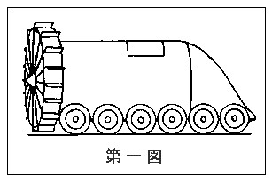
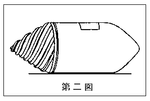
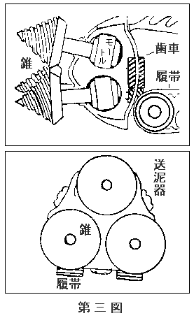

| 未来の地下戦車長 | |
| 海野 十三 | |
| (2012) | |
未来の地下戦車長
海野十三
かわった手習
い
岡部
一郎という少年があった。
彼は、今年十六歳であった。
彼の家は、あまりゆたかな生活をしていなかった。それで彼は、或
電灯会社につとめて、もっぱら電灯などの故障の修理を、仕事としている。なかなか一生けんめいに働く一郎であった。
彼は、中学校へもあがれなかったが、技術は大好きであった。そのうち、電気工事人の試験をうけて、一人前の電気工になろうと思い会社の係長さんに、いつも勉強をみてもらっている。
ところが、その一郎が、近頃、なにに感じたものか、毎朝起きると机に向って墨
をする。
墨がすれると、こんどは、古い新聞紙を机の上にのべて、筆に、たっぷり墨の汁
をふくませる。それから、筆を右手にもって、肘
をうんと張り、新聞紙の面にぶっつける。
〝未来の地下戦車長、岡部一郎〟
これだけで十二文字になる。
この十二文字を、彼は、古新聞の両面が、まっくろになるまで、手習
いをするのである。
一昨日
も、やった。昨日もやった。今日もやった。だから、明日も、やるであろう。
書く文字は、いつも同じである。
〝未来の地下戦車長、岡部一郎〟
毎朝、この文字を三十二へんぐらいも、習うのである。
字が上手になるためのお習字かと思うと、そうばかりではない。いや、はっきりと一郎の気持をいうと、字のうまくなることは、第一の目的ではなく、第二以下の目的だ。第一の目的は、なにかというのに、それはもちろん、本当に、未来において地下戦車長になることだった。
地下戦車長！
地下戦車――なんて、そんなものが有るのであろうか。
地下戦車とは、地面の下をもぐって走る戦車のことである。そんな戦車がある話を、だれも、きいたことがない。だが、一郎は、いうのである。
「そうでしょう。どこにもない戦車でしょう。だから僕は、地下戦車を作って、その戦車長になりたいんだ。ああ、地下戦車！ そんなものがあれば、どんなにいいだろう。日本の国防力が、うんと強くなるにちがいない。だから僕は、きっと作りあげるのだ。地下戦車を！」
岡部一郎は、そんな風に、いうのであった。
それは、正
しく一郎のいうとおりであった。地下戦車とは、じつにすばらしい思いつきである。地下戦車が出来たら、そいつは、どんどん、地面の下を掘っていって、敵陣の真下に出るのであろう。そして、爆薬をそこに仕掛けるとか、或いは、めりめりと、敵の要塞
のかべを破って、侵入する。さぞや敵は、胆
をつぶすことであろう。たしかに、そいつは強力な兵器である。
一郎の思いつきは、じつに、すばらしいのであるが、はたして、そんなものが出来るであろうか。こいつは、なかなかむつかしい問題である。
「そんなもの、出来やしないよ。だって、水の中や空気の中じゃないんだもの。地面を掘ってみても、すぐわかるけれど、土というものは、案外かたいものだよ」
と、一郎の仲良しの松木亮二
が、いったことである。
「そんなに、かんたんに、出来やしないよ。しかし、工夫すれば、きっと出来ると思うんだ。それに、地下戦車が日本にあれば、すてきじゃないか。どこの国にだって、負けないよ。僕は、なんとかして、地下戦車を作るんだ」
「だめだよ。そんなむずかしいものは......」
「いや、作るよ。作ってみせる。きっと作って、亮二君を、びっくりさせるよ。いいかい」
「だめだめ。出来やしないよ。そんな夢みたいなこと」
亮二は、一郎のいうことを、とりあわなかった。
いや、亮二でなくとも、大人でも、一郎のいうことを、とりあわなかったであろう。
「日本のため、僕は、どんなことがあっても、地下戦車を作ってみせるぞ」
電灯会社の修理工の一郎は、だんぜん地下戦車を作りあげるつもりである。さればこそ、毎朝、〝未来の地下戦車長、岡部一郎〟と、大きな文字を書いて、自分をはげましているのであった。
はたして、地下戦車は、一郎の手によって、出来上るだろうか。今のところ、少年修理工岡部一郎と地下戦車との間には、あまりに大きなへだたりがあるように見える。
痛い瘤
一郎は、それから後も、ずっと、〝未来の地下戦車長〟の手習
いをつづけていた。
或日、彼は、会社の机に向って、そこに有り合わせた修理引受書
用紙を裏がえしにして、ペンで〝未来の地下戦車長〟と、また書き始めたのであった。
「おや、岡部。お前、なかなか字がうまいじゃないか」
とつぜん、うしろで、係長の小田
さんの声がした。
「いやだなあ、ひやかしちゃ......」
と、一郎は、きまりが悪くなって、顔をあかくした。
「なんだい、この〝未来の地下戦車長〟というのは......」
小田係長は、にこにこ笑いながら、うしろから一郎のあたまをおさえた。
「うわッ。いたい」
と、一郎は、係長さんの手を払
って、その場にとび上った。
「あれッ。どうした。どこがいたい」
「係長さん、ひどいや。僕の頭に、いたい瘤
があるのに、それを上から、ぎゅッとおすんだもの」
「ははあ、瘤か。そんなところに瘤があるとは知らなかった。地下戦車長岡部一郎大将は、はやもう地下をもぐって、そして、そんなでかい瘤を、こしらえてしまったのかね」
係長さんは、うまいことをいった。
一郎は、こまってしまった。
そこで彼は、未来において地下戦車長を志
すわけを、係長に話をした。
「そうかい、これはおどろいた。君は、本気で、地下戦車を作るつもりなんだね」
「そうですとも」
「それで、なにか、やってみたのかね」
「え、やってみたとは......」
「なにか、模型でも、つくってみたのかね。それとも、本当に、穴を掘って、地下へもぐってみたのかね。頭に瘤をこしらえているところを見ると、さては、昨日あたり、もぐらもちの真似をやったことがあるね」
係長さんは、しきりに、一郎の頭の瘤を、いい方へ考えてくれる。
しかし、この瘤は、そんなことで出来たのではなかった。尤
もこの瘤は、昨日出来たことだけは、係長さんのことばどおりであったけれど。この瘤は、じつをいえば、昨日、停電した家へ、一郎がいって、ヒューズの取換
えをやったが、そのとき、うっかりして、鴨居
へ、頭を、いやというほどぶつけたため、出来た瘤であった。決して、名誉な瘤ではなかったのである。
「係長さん。僕は今のところ、こうやって、毎日手習いをしているのです。そして、神様に祈っているのです」
「なんだ、たった、それだけかい」
「ええ、今のところ、それだけです」
「それじゃ、しようがないねえ」
係長さんは、はきだすようにいった。
「手習いしていちゃ、いけないのですか」
「いや、手習いは、わるくはないさ。しかし、われわれ技術者たるものはダネ、何か考えついたことがあったら、すぐ実物
をつくってみることが必要だ。技術者は、すぐ技術を物にしてみせる。そこが技術者の技術者たるところでもあり、誇りでもある。――いや、むつかしい演説になっちまったなあ。くだいていえば、早く実物をつくりなさいということだ。考えているだけで、実物に手を出さないのでは、技術者じゃないよ。実物に手をだせば、机のうえでは気のつかなかった改良すべき点が見つかりもするのだ。おい、未来の地下戦車長どの。こいつは一つ、しっかり考え直して、出直すんだな。私は、たのしみにしているよ」
そういって、係長さんは、一郎の頭に手をやろうとした。
「おっと、おっと――」
一郎は、あわてて、体をかわした。
「あははは。これは、うっかりしていた。あははは」
「あははは」
一郎も笑った。全く、厄介
なところへ瘤が出来たものである。
そのとき、向うから、一郎を呼ぶ声があった。
「おーい、岡部。通
のそば屋さんから、電話があったんだ」
「おそばなんか、だれも註文
しませんよ」
「註文じゃないよ。コンセントのところから火が出て、停電しちゃったとさ。早く来て、直してくれというんだ。ぐずぐずしていると、代用食
を作るのがおそくなって、会社へも、おそばをもっていけないから、早く来て、直してくれだとさ。だから、お前、すぐ行ってくれ」
「へえ、ばかに、長いことばを使って、修理請求をしてきたものだね」
「それは、そのはずだよ」
「えっ」
「あたまが悪いなあ。電話をかけてきたのは、おそば屋さんだもの。おそばは、長いや。あははは」
「なあんだ。ふふふふ」
仕事をしていた係の人々も、一度にふきだした。
「これこれ、笑い話は、後にして、岡部、自転車にのって、直
ぐ、おそば屋へいって来なさい。一分おくらせれば、それだけ、国家の損失なんだから......」
係長さんも、にやにや笑いながら、一発痛いところを、一郎たちにくらわせた。
戦車博物館
その日の夕方、一郎は、家へ帰った。
弟や妹が、総出で、お膳の仕度をしていた。やがて、母親が、お勝手から、大きな丼
にもりあげたおかずをもって、お膳
のところへ来た。それから、まるで戦場のように急
がしくて賑
かな食事が、いつものように始まった。
一郎たちの父親は、一昨年、病気で亡
くなった。だから、さびしい母親を、一郎をはじめ、四人の子供たちが、なぐさめ合い、元気をつけているのであった。
食事が終ると、子供たちは、母親のお手伝いをして、跡片付
けだ。みんなが働くから、どんどん片付いていく。
その後は、みんなラジオの前に、あつまってくる。
だが、一郎は、その夜にかぎって、ラジオの前に出て来なかった。彼は、玄関においてある自分の机の前に坐りこんで、前に一枚の紙をのべて、しきりに首をひねっている。
紙の上は、まだ、まっ白だった。
「ええと、地下戦車というやつは、どんなところをねらって、こしらえればいいかなあ」
彼は、ひとりごとをいった。それで分った。彼は、いよいよ地下戦車の設計にとりかかったのである。察するところ、昼間、係長の小田氏からいわれたこと――〝神に祈るのもいいが、ただ祈るだけじゃ、だめだ。また、考えているだけじゃ、だめだ。技術者という者は、考えたことを、早く実物につくりあげて、腕をみがき、改良すべき点を発見して、更
にいい実物をつくり上げるよう、心がけねばならぬ〟――ということばが、深く一郎の心に、きざみつけられたものと見える。そこで、いよいよ実物設計にとりかかったわけである。
「どうも、見当がつかないなあ。どこを、ねらえばいいのかなあ」
一郎は、すこし苦戦のていであった。
「とにかく、地面の下を、戦車が掘りながら、前進しなければならないんだから、つまりソノー......」
つまりソノーで、困ってしまった。
一郎は、気をかえて、本箱の間をさがしはじめた。
やがて彼は、一冊の切抜帳を引張り出して、これを机の上に、ひろげた。この切抜帳には、ものものしい題名がついている。曰
く「岡部一郎戦車博物館第一号館」と！
岡部一郎戦車博物館第一号館！
いや、これは、他の人が読んだら、ふき出して笑うだろう。
しかし一郎は大真面目であった。
各頁
には、新聞や雑誌から切り抜いた世界各国の戦車の写真が、ぺたぺたと、はりつけてある。そしてその下には、その戦車の性能が一々くわしく記入されている。
（この戦車が、みんな実物だったら、大したもんだがなあ）
一郎は、切抜帳をひろげるたびに、そう思うのであった。
なにも実物であるには及ばない。たしかにこの切抜帳は、りっぱな戦車博物館である。第一号館は、もう頁
が残り僅
かであった。
（やあ、もう陳列場所が、いくらもあいていないぞ。近いうち、第二号館の建築に、とりかからなくては......）
一郎は、なかなか忙しい身の上だ。
さて、「第一号館」を、いくども、ひっくりかえしてみたが、そこにある戦車は、いずれも地上を駆
ける戦車ばかりであった。こいつを、このまま、地下へはこび入れても、さっぱり前進させることができないことは、明白であった。
「はて、これだけ、りっぱな戦車がたくさんあっても、参考になるものは一つもないぞ」
一郎は失望を禁ずることができなかった。
全く、いやになってしまった。彼は、ごろんと、うしろにたおれて、ぼんやり考えこんでいたが、そのうち、ふと、誰かのいったことばを思い出した。
〝欧米など、外国の工業に依存していたのでは、日本にりっぱな工業が起るわけがない。はじめは苦しいし困るかもしれないけれど、日本は日本で一本立ちのできる独得の工業をつくりあげる必要がある。それは一日も早く、とりかからなくてはならないことだ！〟
一郎は、むっくり起き上った。
「そうだ。真似をすることなら、猿まわしのお猿だって、うまくする。よし、自分で考えよう！」
「なにを、ひとりごとをいっているの、兄
ちゃん」
後で一番とし下の弟の二郎の声がした。
「二郎、だまっておいでよ」
「いやだい。兄ちゃん、いくよ。お面
！」
ぽかりと、一郎の頭に、新聞紙をまいてつくった代用品の竹刀
が、ふりおろされた。
「ああッ、いたい！」
一郎は、とび上った。なんとまあ、災難
な頭の瘤だろう。ちょうど、頭のてっぺんにある。弟までに、その痛いところを殴
りつけられて......。
だが、一郎は、逃げ足の早い弟を、追おうともしなかった。じつにそのとき、彼は、神様のお声をきいたように思ったのである。
「そうだ。係長さんが、〝おい岡部、その瘤は、もぐらもちの真似をして、こしらえた瘤なんだろう〟といった。そうだそうだ。僕は、なにをおいても、自分が地下戦車になったつもりで、まず自分で穴を掘ってみよう。それがいい」
彼は、えらいことを悟
った！
人間地下戦車
次の日から、一郎の生活が一変した。
彼は、朝早く起きると、例の手習いをすませ、その後で、この寒いのに、シャツとパンツとだけになって、庭におりた。
「さあ、僕は地下戦車だぞ。どこから、もぐるかなあ」
彼の手には、シャベルが握られていた。
「さあ地下戦車前進！」
彼は自分で、自分に号令をかけた。そして、えっさえっさと懸
け声
をして、シャベルで、庭の土を掘りだした。
弟の二郎が、その声をききつけて、とんできた。
「兄ちゃん。そこを掘ってどうするの。畑をこしらえて、お芋
を植えるの」
「ちがうよ」
「じゃあ、ううッ、西瓜
を植えるの。玉蜀黍
植えるの」
二郎は、自分の大好きなものばかりを、かぞえあげる。
「ちがうよ、ちがうよ」
「じゃ、なにを植えるの。僕に教えてくれてもいいじゃないか。あ、分った。南京豆
だい。そうだよ、南京豆だい」
「ちがうちがうちがう。ああ、くるしい」
一郎はふうふういって、泥だらけの手の甲
で額
を横なぐりに拭
いた。
「あ、兄ちゃんが顔を泥だらけにした。お母ちゃんに、いいつけてこようッと」
二郎は、ぱたぱたと縁側
をはしっていった。一郎は、自分の掘った穴をみている。こんなにふうふういって、穴を掘ったのに、その穴は、やっと自分の頭が、入るくらいの大きさに過ぎなかった。
「この人間戦車は、性能が悪いなあ」一郎は、嘆息
した。
しかし、こんなことで、へたばっては、未来の地下戦車長もなにも、あったものではない。そう思った一郎は、再びシャベルを握ると、さらに大きな懸け声を出して、えっさえっさと、穴を掘っていった。
ばたばたと、縁側
に、足音がした。
「まあ、一郎！」母親の、呆
れたらしい声だった。
「ほらね、お母ちゃん。兄
ちゃんの顔、あんなに、泥んこだよ」
「一郎、朝っぱらから、なにをしているのです」
「僕は今、......」いおうと思ったが、一郎は、そこで、あやうくことばを呑んだ。
（ああ、もうすこしで喋
るところだった。語るな、軍機
だ！ たとえ、母親にだって）
「ちょっと、いえないの。国防上、秘密のことをやってやる［＃「やってやる」はママ］
んですからねえ」
「え、国防上秘密のこと？」
母親は、聞きかえしていたが、やがて二郎の頭をなでて、
「二郎や。兄ちゃんは、防空壕
を掘っているのだよ。出来たら、お前も入
れてお貰
い」
そういって、母親は安心して、奥に引込んでしまった。
（防空壕？ ははあ、これが防空壕に見えるかなあ）
防空壕をつくるにしても、一人では、たいへんである。シャベルをもつ一郎の両腕は、今にも抜けそうになってきた。しかし彼は頑張って、土と闘った。
それでも二十分程かかって、やっと腰から下が入る位の穴が掘れた。
彼は、疲れてしまって、自分の掘った穴に、腰をかけた。シャベルの先をみると、土とはげしく磨
り合
ったために、鋼鉄が磨かれて、うつくしい銀色に、ぴかぴか光っていた。
鉄と土との戦闘である――と、彼は、また一つ悟
ったのであった。
それから彼は、また頑張って、庭を掘りつづけた。ようやく、自分の体が入るだけの穴が出来たとき、また母親が顔を出した。
「一郎。もう三十分前だよ。会社へ出かけないと、遅くなりますよ」
「はい。もう、よします」
人間地下戦車は、土を払って、立ち上った。
さて、この調子では、いつになったら、本当の地下戦車が出来ることやら......。
だが、この一見ばからしい土掘り作業こそ、後
の輝かしい岡部地下戦車兵団出現の、そもそも第一頁
であったのである。だが、今ここでは岡部将軍も只の一少年工に過ぎなかった。
蘭丸
と数値
「係長さん、僕は、けさ、人間地下戦車になって、活動を開始しましたよ」
岡部一郎は、会社へいってからお昼の休みの時間に彼をかわいがってくれる係長の小田さんに此
報告をした。
「なんだって。その人間なんとかいうのは、なんだね」
係長さんは、鼻の下の小さい髭
をこすりながら、一郎の顔をみた。
「人間地下戦車ですよ」
「人間地下戦車？ なんだい、それは......」
係長さんは、目をぱちぱちして、鼻の下をやけにこすった。この係長さんは、わからないことがあると目をぱちぱち、鼻の下をやけにこするくせがある。そうやると、頭がよくなって、理解力が出てくるらしい。
そこで一郎は、けさ、うちの庭で、シャベルをもって、土を掘ったことや、母や弟から、防空壕をつくっているのだと思われたことを話した。
「......人間地下戦車は、だめですね。ほんのぽっちりしか、穴が掘れないのですもの......」
と、一郎が残念そうにいうと、係長さんは「ふーん、それはまあ、そうだろうな」とうなずき、
「だが、岡部。ほんのぽっちりしか掘れなくても、もしもこれを毎日つづけて一年三百六十五日つづけたとしたら、どうだろう。計算してみたまえ」
「計算？ 計算するのですか」
「そうだ。技術者というものは、すぐ計算をやってみなければいけない。多分このくらいだろうと、かん
だけで見当をつけるのは、よくないことだよ。技術者は、必ず数値のうえに立たなくちゃ」
係長さんが、むつかしいことをいいだしたので、一郎少年は、わけがわからなくなった。
「数値のうえに立つとかいうのは、なんのことですか。石段の上でも、のぼるのですか」
「冗談じゃないよ。数値の上に立つというのが、わからないかね。岡部は森蘭丸
という人を知っているかね」
「森蘭丸？ 森蘭丸というのは、織田信長の家来
でしょう。そして、明智光秀が本能寺に夜討
をかけたとき、槍をもって奮戦し、そして、信長と一緒に討死
した小姓
かなんかのことでしょう」
「そうだ、よく知っているね。どこで、そんなことおぼえたのかね。ははあ分った。浪花節
をきいて、おぼえたね」
「ちがいますよ。子供の絵本でみたんですよ」
「子供の絵本か。僕は浪花節で、おぼえたのだよ。あははは。――まあ、そんなことは、どうでもよい。その森蘭丸が、なかなか数値の上に立つ行
いがあったことを知っているか」
「知りませんねえ」
「じゃあ、話をしてやろう。信長が、或る日、小姓を集めていうには、お前たちの中で、もしも余の佩
いているこの脇差
のつかに、幾本の紐
が巻いてあるか、その本数をあてたものには、褒美
として、この脇差をつかわそう。さあ、誰でも早く申してみい。『はい』と答えて力丸
ゥ......」
「係長さん、へんなこえを出さないでくださいよ。今、所長さんが、戸口から、じろっとこっちを睨
んで通りましたよ」
「なあにかまやしないよ。別に悪いことをやっているんじゃない。これで三味線
がはいると、わしゃ、なかなか浪花節をうまく語るんだがなあ」
「係長さん、どうぞ、その先をいってください」
「うむ、よしきた。『二十五本でございます』と、力丸
はいった。『あはは、ちがうちがう、お前は落第だ。さあ、他の者！』こんどは坊丸
が、『お殿さま、四十二本でござります』『ああそんな不吉の数じゃない。駄目駄目、さあ、お次』と、だんだん小姓たちに答えさせてみるが、一人として、これを当てるものがない。すると、残ったのが、森蘭丸、只一人じゃ。『蘭丸、お前はさっきから、黙っているが、あとはお前一人じゃ、早くこの脇差のつかをまいてある紐の本数をこたえろ』と信長の御催促
があった。そのとき森蘭丸は、へへッと頭を下げ、『わたくしは、その答を仕
りません』という。信長、声をあららげ、『答えぬとは、無礼者。なぜに答えぬ。そちはこの脇差が欲しゅうないか』蘭丸つづいて平身低頭
いたし『おそれながら、申上げます。御脇差は、欲しゅうござれど、私はお答えいたしませぬ』『なぜじゃ、わけをいえ』『はい私は、その紐の本数を、存じ居
ります。実を申せば、お殿さま、厠
に入
らせられましたとき、私はお出を待つ間に、紐の本数を数え置きました。されば、私は存じ居
るがゆえに、お答えすることをば憚
ります』蘭丸は、仔細
を物語って、平伏
した。――どうだ、聞いているかね」
旅順戦
の坑道
「ええ、聞いております。なかなか面白い浪花節的
お話ですね」
「これからがいいところだ。よく聞いていなさい。――そこで信長公は、蘭丸の正直を非常にほめて、脇差を下し置かれた。実は信長公は、先ごろ厠
に入っていて、蘭丸が脇差の紐の本数を数えているのを隙間
から御覧になっていたのだ、そこで、わざとこういう質問を発して蘭丸の正直さをたしかめてごらんになったという話さ。どうだ、感心したか」
「感心しましたが、数値の上に立つというのは......」
「そこだよ。信長公は蘭丸が正直なのを褒
めて、脇差を下し置かれたと、浪花節ではいっているが、それは噓だと思う」
「噓ですか。では......」
「僕は、噓じゃないかと［＃「噓じゃないかと」は底本では「噓じゃないと」］
思う。信長公は、こういって褒められた。『蘭丸、お前は数値の観念があって、感心な奴じゃ。何でも、物の数は、数えておぼえておけば、必ず役に立つ。大きくなって、軍勢を戦場に出してかけひきをするについても、まず必要なのは、作戦は常に数の上に立っていることじゃ。数を心得ないで、かん
ばかりで物事を決めるような非科学的なでたらめな奴は、頼母
しくない』と、信長公は蘭丸を褒められたのが真相じゃろうと、僕はそう思うんだ」
「なあんだ。係長さんが、そう思うのですか」
「いや、本当は、きっとそうだろうと思うのだ。信長公は、科学的なえらい大将だったからね。つまり、数というものを土台にして、物事を考えるという事が、たいへん大事なことなのさ」
「いや、面白いお話を、ありがとうございました」
と、一郎は、おじぎをして、向うへ行こうとした。
すると係長さんは、大声で、それを停め、
「おいおい、岡部。お前は話の途中で向うへいっては、いけないじゃないか」
「はあ、まだ話のつづきがあるのですか」
「続があるのですかじゃないよ。ほら、あのことはどうした、君の家の防空壕のことは......いや防空壕じゃない、人間地下戦車のことは......」
「ああ、そうでしたね。こいつは、しまった。係長さんのお話が、あまりに面白かったもので、話の本筋を忘れてしまったんです」
「つまり、いいかね、一日で掘った壕の長さを三百六十五倍すると、一年間に、どのくらいの壕が掘れるかという答えが出てくるだろう。さあ、計算してみたまえ」
係長さんは、ちゃんと、話の本筋をおぼえていた。
「さあ、けさ、掘ってきたのは、ほんのわずかです」
「わずかでもいい。これを三百六十五倍するのだ」
「ええと、まだ穴になっていないのですけれど、あの調子で毎朝掘るとして、三日に、一メートル半位ですかね」
「じゃあ、一日につき半メートルだね。その三百六十五倍は？」
「半メートルの三百六十五倍ですから、百八十二メートル半ですね」
「そら、見たまえ、百八十二メートルもの穴といえば、相当長い穴じゃないか」
「そうですね。ちょっと長いですね」
「朝だけ、掘っても、一年には約二百メートルの穴が出来る。これを十人が掘れば、二千メートル。また二百メートルの穴でよいのなら、十人あれば、三十六七日で掘れる。明治三十七八年戦役
のとき、旅順
の戦
において、敵の砲台を爆破するため、こうした坑道
を掘ったことがあるそうだ」
「はあ、人間地下戦車は、そんな昔に、あったのですか」
「うむ。いくら、わが軍が、肉弾でもって、わーっと突撃していっても、敵のうち出す機関銃で、すっかりやられてしまって、敵の陣地も砲台も一向に抜けないのだ。仕方がないから、敵の陣地や砲台の下まで坑道を掘った。そして、ちょうどこの真下に、爆薬を仕かけてきて、導火線を長く引張り、そしてどかーんと爆発させたのだ。こいつが、なかなか効
き目
があって、それからというものは敵の陣地や砲台が、どんどん落ちるようになった。わが工兵隊のお手柄だ」
「はあ、なるほど。昔の兵隊さんは、えらいことをやったものですね」
「あまり効き目があるものだから、敵の方でも、この戦法を利用して、わが軍の方へ穴を掘ってきた。とんかちとんかちと、穴の中でつるはしをふるって土を掘っているのが、お互いに聞えることさえあった。早く気がついた方が、爆薬をしかけて、後方へ下がる、知らない方は土を掘りながら、爆死したものだ」
「ずいぶん、すごい話ですね。係長さん、これもやっぱり、浪花節でおぼえたのですか」
「ばかをいえ。そういつも浪花節ばかり聞いていたわけじゃない。これは、その戦争に出た、僕のお父
さんから聞いた話だ」
井戸掘り地質学
係長さんから、数値の上に立った模範少年の森蘭丸の話を聞いたり、それからまた、旅順攻撃の、坑道掘りの話を聞いて、「未来の地下戦車隊長」を夢みる岡部一郎は、たいへん教えられるところがあった。全く、小田さんは、いい係長さんだ。
一郎は、その日も夕方、家へ帰ると、一時間ばかり、シャベルを持って穴を掘った。その翌日も、朝起きると、シャベルを握った。こうして続けているうちに、穴は段々深くなり、地上から三メートル位も深く掘れた。
或る日の夕方、一郎が、あいかわらず、人間地下戦車となって、汗みどろに土を掘っていると、
「一郎さん、此頃
しきりに土地を掘っているようだが、井戸掘
りかね」
と、声をかけた者がある。
「ああ、お隣りの御隠居
さんですね。井戸ではないのですけれど......」
「じゃあ、防空壕かね。防空壕が出来たら、わしも入れてもらいますよ」
「防空壕でもないんだけれど......」
「じゃあ、何だね」
「さあ、ちょっといえないんですよ」
軍機の秘密だ。母親にさえ、打ちあけてない秘密なのだから......。
「わかっているよ、一郎さん。防空壕だよ。防空壕が出来ても、わしを入
れまいとして、そういうんだろう。わかっていますよ」
「いえ、御隠居さん、決してそうじゃありませんよ」
「いや、わかっています。わしには何でもわかっているんだ。しかしね、一郎さん。土を掘るのもいいが、地質
のことを考えてみなくちゃ駄目だよ」
「地質ですって」
「今、掘っているのは、どういう土か、またその下には、どんな土があるかということを心得ていないと、穴は掘れないよ」
御隠居さんは、中々物知らしい。
「じゃあ、教えてくださいよ」
「わしも、くわしいことは知らんが、お前さんが今掘っているその土は、赤土
さ」
「赤土ぐらい知っていますよ」
「その赤土は、火山の灰だよ。大昔、多分富士山が爆発したとき、この辺に降って来た灰だろうという話だよ。大体、関東一円、この赤土があるようだ」
「はあ、そうですか。御隠居さんも、なかなか数値のうえに立っているようだな」
「え、なんだって」
一郎は、口を滑
らせた。しかし、これは、説明しても、とても御隠居さんには分るまいと思って、だまっていた。すると御隠居さんは、
「赤土が二三十尺もあって、それを掘ると、下から、青くて固い地盤
が出て来るよ。まるで燧石
のやわらかいやつみたいだ。こいつは掘るのに、なかなか手間がかかる。しかし、そこまで掘れば、大体いい水が出るね」
「水なんか、どうでもいいのですよ」
「いや、こいつを心得ていないと、とんだ失敗をする。わしが若いころ井戸掘りやっていたときには......」
と、そこまでいったとき、御隠居さんは、自分の家の人に呼ばれたようである。（お爺
さん、余計なことを言
なさるものじゃありませんよ）（なあに、かまやしないよ、わしは、若いとき井戸掘りで渡世
していたんだから）（だって、あまり名誉な仕事でもないわ）（そんなことはない。第一、お前もわしが井戸掘り稼業
をしたればこそ、おまんまに事欠
かなかったんだし、それに井戸掘りがなけりゃ、誰も水が呑めやせん。水が呑めなければ、飯がのどへ通るかい）などと一郎の頭の上で、大分やかましい話がやりとりされていたが、やがて、御隠居さんの顔が、穴の上に現われて、
「おい、一郎さん。シャベルだけじゃ、穴は掘れないよ。うちに、つるはしがあるから、それをお使い」
「はい、すみません」
「そのうちに、わしも、腰の痛いのがなおったら、手伝うよ。昔とった杵
づかだからねえ」
「いえ、もうたくさんです。御隠居さん」
一郎は、一生けんめいに辞退した。老人間
の地下戦車なんて、どうひいき目に見ても、役に立たないであろう。それに、また腰が痛くなったり、リューマチが起ったりすると、今、いい合っていた口喧
しやの娘さんから、恨
まれる。つるはしを借りただけで、応援の方は、ごめん蒙
ることにしようと、一郎は思ったことである。
土はこび少年隊
つるはしは、すこぶる重かった。
（こんな重いものが、ふりまわせるかしら）と、始め隣りの御隠居さんから借りて来たときは心配した一郎だったけれど、そのつるはしをうまいことふりあげて、下
ろすときにはつるはしの重味で、さっとふり下ろすと、うまい具合につるはしは土の中にくい込むのだった。あまり力も要らない。なるほど、つるはしを皆が使うはずだと、一郎は感心した。つるはしを使い出してから、横穴は、どんどん先の方へあいていった。その代り、実に厄介
なのは、土を地上へ上げることだった。むしろこの方に手間がとれた。といって、土をそのままにして置くと、いつの間にか、通路がふさがってしまって、外へ出られない。土を退
けることが、たいへんな仕事であることが、しみじみと感じられてきた。
そこで一郎は、思い悩んで、ぼんやり考えこんでいると、弟の二郎が、遊び仲間の子供たちを沢山つれて、やってきた。
「ほらネ、防空壕だろう。うちの兄ちゃんが、ひとりで、こしらえているのだよ。どうだい、すげえだろう」
「二郎ちゃん。この防空壕には何人はいれるの」
「それは......それは、ずいぶんはいれるだろうよ」
「じゃあ、僕もいれておくれよ」
「だめだめ、信
ちゃんなんか。信ちゃんは、ねぐるいの名人で、ひとの腹でも何でも、ぽんぽん蹴るというから、おれはいやだよ」
「そんなこと、うそだい。その代り、僕、二郎ちゃんの兄ちゃんの手伝いをするぜ。うんと働くぜ」
「でも、そんなこと、だめだい」
「おい、二郎」
二郎が、後をふりかえった。
「なんだい、兄ちゃん」
「お前たちで、土をはこべよ。防空壕が出来たら、土をはこんだ人は、みんな中にはいってもいいということにするから。その代り、土をはこばない人は、ぜったいに、いれてやらないよ」
「そうかい。おい、みんな聞いたね。じゃあ、みんなで土をはこぼうや」
「あたいも、やるよ」
「僕もやる。うちのお母
ちゃんがいったよ。防空壕ならうちでつくってもいいからよく見ておいでとさ。僕ここで手伝って、家でもつくるよ」
二郎の友だちの少年が、土はこびを手伝うこととなった。防空壕が出来るというので、一郎の母親も、これを叱
らなかった。また、今手伝っておけば、いざ空襲
というとき、その中に入れてくれるというので、土はこびに参加する少年が日ましに数をまして来たのであった。
くすぐったいのは、一郎だった。
（はじめは人間地下戦車の訓練をやるつもりだったけれど、これはとうとう防空壕をつくることになったぞ。しかし防空壕は必ず作らなければならないものだし、それにこうしてみんなで土に慣れるということはいいことだ。とにかく自分は、まっ先に立ってやらなければならない）
そう思って、一郎は、半分は地下戦車をつくる上において土になじむためと、あと半分は、これを利用して、防空壕をつくるためと両方に目標をおいて、相
もかわらず、穴の奥へはいりこんで、土を掘っていった。
「ははあ、これが本ものの赤土だな。本当に赤いや」
ぐさっと、シャベルを土の中に突き入れる。
「赤土は、きれいなものだ。おや、また、水が出てきたな。どうも、このへんに、地下水のみちがついているらしい。防空壕のほかに、井戸を掘ってもいいなあ」
ぐさっと、またシャベルを土の中に突きこむ。土が、天井から、ぱらぱらと落ちる。蠟燭
の灯が、ゆらゆらと、消えそうに揺れる。
「もう、ずいぶん掘った。このうえは、ちょうど空地
になっているはずだ。見当をまちがって、鬼河原
さんの家の下を掘ると、ひどい目にあうぞ。いつだか、鬼河原さんの家令
とかいう人が、かんかんになって怒って来たからなあ、まあ、鬼河原さんの庭園はよけて掘ることにしよう」
一郎はそう思いながら、つるはしをえいッとふるったが、そのとき天井の土がぱらぱらと大量に落ちて来たと思うと、ちょろちょろ音がして上から水が落ちて来た。はて、へんなことになったわい。
人間地下戦車の行先
地下壕
の天井
から、水は、ますますいきおいよく落ちてくる。
「地下水にしては、いきおいがはげしいぞ」
と、岡部一郎は、けげんな顔で上の様子をうかがっていると、そのうちに壕の中が俄
かに明るくなった。
「おやおや、へんだな」
と思っていると、足許
が、はっきり見えるではないか。手提電灯
の光で見えるのではない。もっと白々
と、はっきり見える。そのうちに、壁をつたわって、なにかしら、いやに赤いものが、ちょろちょろと流れおちてきた。
「おや、いやに赤いものが、流れてきたぞ。このあたりは赤土の層だというが、いくら赤土にしても、すこし赤すぎるようだが......」
と、一郎は、ふしぎそうに、自分の足許へ流れて来たその赤いものを見ていると、それが、ぴんぴんと跳
ねだしたではないか。
「あれェ、赤土が、跳ねるなどということが、あるだろうか。赤土が、魚になったのかしら......」
と、一郎は、まだ気がつかない。
「ほう、金魚のようだぞ。地下金魚――なんてものが棲
んでいるのだろうか」
一郎は、また顔をあげて天井を見たが、そのとき、大きな音がして、天井の土が、どしゃりとくずれた。
「あっ！」
と、一郎が、とびのくのと、天井に、ぽっかりと明るい窓があくのと、ほとんど同時であった。
「これは、へんだ。ひょっとすると......」
と思っているうちに、その天窓
が急にくらくなったかと思うと、大きな黒い材木のような怪物が落ちてきた。そして、一郎の足許で猛烈にあばれだしたから、さあ、たいへんであった。一郎の顔も服も、泥水をぶっかけられて、目もあけていられない。跳ねている怪物は、目の下半メートルもあろうという大鯉
だった。
天井から、奔流
する水は、ものすごく、まるで天竜川
のようであった。一郎の膝の下は、たちまち水の中につかってしまった。そうなると、もう、逃げだすことも出来なかった。逃げだす路は、天井にあった穴のほかはなかった。
水は、いいあんばいに、腰のところでとまり、それ以上はふえなかったから、一郎は、かろうじて溺死人
とならないですんだ。
彼は、シャベルとつるはしとを力にして、ずるずるする斜面を、天窓の方へのぼっていった。そこには、もう一郎の身体のはいるだけの大きな穴があいていた。
「よっこらしょ、よっこらしょ」
一郎は、斜面をのぼっていった。そしてついに、その天窓から、首を出してみた。
「うわッ」
きゃーっという悲鳴が、彼の耳をうった。
「怪物だァーおい、逃げろ」
という声も聞えた。
だが一郎は、あまりに眩
しくて、しばらくは何も見えなかった。なんだか、ひろびろとした世界へ出ているらしいことはわかったけれど......。
「こりゃ怪物、そこうごくな。そちに、あいたずねるが、貴公は人間の性
をもったる者か、それとも、河童
のたぐいであるか。正直に、返答をせよ」
へんな言葉づかいの声が、岡部一郎の耳にきこえてきた。そのとき彼は、もう観念してしまった。ようやく事情が、はっきりしたのであった。地中を掘ってゆくうち、そういうことのないように気をつけていたつもりであったけれど、とうとうお隣りの鬼河原邸
の泉水
をこわしてしまったのであった。すなわち今彼に向って「やあやあ汝
は人間の性
か河童のたぐいか」とどなっているのは、鬼河原家の三太夫
氏の声にちがいない。
「えらいことを、やってのけたぞ。三太夫さんがびっくりしているうちに早いところ逃げないとたいへんだ」
一郎は、ふたたび、
「うわーッ」
と、声をあげると、穴からとびだした。
なにごとが起ったかと、泉水の方をこわごわみていたお邸
の連中は、泉水の中から、いきなり、泥まみれの小僧
が、シャベルとつるはしとをもってとびだしたものだから、きもをつぶしてしまった。奥へ逃げこむ者、その場にへたばる者、わめきちらす者のある中を、一郎は、自分の家の庭に生えている大きい欅
の樹を見当にして、まっしぐらに走りだした。そして、お邸の垣根をこえて、自分の家の庭へ、とびこんだのであった。
人間地下戦車事件の終幕だった。
人間地下戦車が、お隣りの鬼河原邸の泉水
をこわしてしまったので、岡部一郎は、たいへん叱られた。
そのあげく、とうとうシャベルもつるはしも、一郎から取り上げられてしまったので、彼は、当分おとなしくしなければならなかった。しかし彼は決して、地下戦車をこしらえ地下戦車長になることを断念したわけではなかった。国防のために突進しようと決心した彼であった。誰に叱られようと、退却するようないくじなしの岡部一郎ではなかった。
信越線
さて、それから月日がながれた。そして、冬となった。
会社の主任の小田さんが、急に新潟県へ出張することになった。
それを聞いた一郎は、ぜひ小田さんについて行
きたいとねがった。彼は、東京育ちであったから、新潟県というところを、見たくなったのである。
それを聞いて、小田さんは、
「おい岡部、今ごろ新潟県へいっても、すこしも、おもしろいことはないよ。今は、雪ばかり降っているのだ。高田市などは、もう四、五メートルも雪が積っているという話だから、たいへんだよ」
小田さんは、一郎をつれていって、風邪
を引かせるといけないと思い、そういった。
「ぜひ僕は、いきたいんです。小田さん、僕は、雪がそんなに降ったところを見たことがないから、ぜひみせてください。それから僕は、もう一つ、ぜひみたいものがあるんです」
「もう一つみたいものって、なにかね」
「それはねえ、ラッセル車です」
「ラッセル車？」
「つまり、鉄道線路に積っている雪をのける機関車のことです。いつだか、雑誌でみたのですよ。雪の中を、そのラッセル車が、まるい大きな盤のようなものをまわして、雪を高くはねとばしていくのです。すばらしい光景が、写真になって出ていた」
「ああ、そうか。それなら、ロータリー式の除雪車
のことだな。そんなものをみて、どうするのかね」
と、主任の小田さんは、また目をくしゃくしゃさせ、そしてしきりに鼻の下をこすった。
「それは、いわなくても、わかっているじゃありませんか。僕、このロータリーとかいうのを見て、地下戦車をこしらえる参考にしたいのです。だから、ぜひつれていってください」
「ははあ、そうか。やっぱり、そうだったのか。よし、そういうわけなら、所長に頼んで、なんとかしてやろう」
小田さんは、わかりの早い人である。そこで所長にうまく話こんでくれた。その結果、岡部一郎は、破格
の出張を命ぜられることとなった。
生れてはじめての遠い旅行である。小田さんと待ちあわせて、上野駅を夜行でたった。汽車は、たいへん混んでいた。
「岡部、安心して、ねなさい。朝になって、いいときに、私が起してあげるから」
小田さんは、一郎をねるようにすすめた。一郎は一時に気づかれが出て、まもなく、ぐっすりと寝込んだ。
朝は、早く目がさめた。一郎を起してくれるはずの小田さんは、まだぐうぐうねむっていた。一郎は、起きるとすぐ、手帳を出して白い頁
をひろげた。そして万年筆を握って、何か書き出した。
「未来の地下戦車長、岡部一郎」
筆墨
はなくても、未来の地下戦車長、岡部一郎と書くことをお休みにすることはできない。
そのうちに、小田さんが、目をさました
「おやおや、もう習字をやっているね。そのうちにやめるかと思ったがなかなかつづくね。全く感心だ」
小田さんは感心をして、未来の地下戦車長のために、朝の弁当を買ってくれた。
除雪車を見たのは、その日のお昼ごろであった。汽車は、雪のため、昨夜来
、やや速力がにぶってきたが、とうとう午前十時ごろには、雪の中に停ってしまった。そして、向うから除雪車が来るのを待つこととなった。
二時間ぐらいたって、
「ああ、来た来た。ロータリーだ」
と、人々がさわぎ出したので、一郎はまだぐうぐうねむっている小田さんをゆすぶり起して、外へ出た。線路の横の雪山のうえにのぼると、除雪車が黒煙
をあげつつ、近づくのが見えた。ロータリーだ。ロータリーに当って、雪は、まるで爆布
［＃「爆布」はママ］
のようにうつくしく横へはねとばされる。壮観
とは、このことであろう。中空
にかかる雪の爆布［＃「爆布」はママ］
は、だんだんと近づいてきた。こっちからは、車体はすこしも見えない。見えるのは、ただ雪と煙りとだけであった。
除雪車が、そばまで来て停ったので一郎は、はじめて、除雪車の構造をよく見ることが出来た。ロータリーの歯車は、ぴかぴか光っていた。雪をはじめにかきこむ鋤
は、ものすごく大きくて、前へ廂
のように出ていた。一郎は、時間のたつのも忘れて、じっと見つめていた。
掘出した扇風機
新潟県から帰ってきて、一郎はすっかり考えこんでしまった。除雪車が、あんなに壮観なものとは考えていなかった。そして、つよい蒸気の力を借りて、たくさんの雪が、みるみる跳
ねとばされていくところなどをみていると、地下戦車も、かならず出来なければならないと感じた。
「地中を、あのロータリー除雪車のもっとしっかりしたようなもので、どんどん掘っていったら、きっとうまくいくかもしれない」
一郎は、なんとかして、そういう機械をつくってみたくて仕方がなかった。
しかし機械をつくるには、たくさんのお金が入用
であった。機関車一台でも、一万円ちかくかかるのであった。一万円などという大金を、一郎がつくれるはずがなかった。だから、ざんねんながら、まにあわせに、模型
でもつくってみるほかないと思った。
さて、模型をつくるにしても、なかなか費用がかかる。一郎のように、貧乏な家の子供は、お金のかかることなんか、出来ないのであった。といって、このまま指をくわえて引込
んでいるわけには、いかなかった。
一郎は、いろいろと思いなやんだ。ひとつ会社をやめて、もっと儲
かる仕事をはじめようかしら。
彼は、発明王エジソンの少年時代のことを思い起こした。エジソンの家も、たいへん貧しかった。しかし少年エジソンは化学の実験がたいへんすきで、もっともっと、自分の思うように、それをたくさんやってみたくて仕方がなかった。そこでエジソン少年は、まず新聞売子になった。新聞を売って、それで儲
けたお金で、たのしい実験につかう薬品を買うことにしたのであった。エジソンは、新聞を汽車の中や駅で売ったのであった。
そのうち、エジソンは、自分で新聞を発行することを考えた。その方が、たくさん儲かるからであった。彼は、汽車の中の一室を、その新聞の発行所にあてた。彼の新聞は、よく売れた。それで、彼の思うような薬品が買えた。彼は汽車の中で、化学実験をつづけたのであった。くるしいけれども、たのしい日が、エジソンのうえにつづいた。或る日、汽車が揺
れた拍子
に車内の薬品棚
から、燐
の壜がおちてこわれ、たちまち燐は空気中の酸素と化合をはじめ、ぼーっと燃えだした。火事だ。汽車の中に火事がはじまったのである。火事を出したおかげで、彼は新聞を発行することが出来なくなってしまった。――そんなことを、エジソンの伝記でよんだことがあった。
「よし、僕は、やるぞ！」
エジソンのように、彼も自力
で働こうと思った。そしてもっと、たくさんのお金を儲け、そしてもっとたくさんの時間を、地下戦車の研究につかえるようにしたいと考えた。
小田さんは、一郎の決心をきいて、いろいろと止めたけれど、彼の決心はつよかった。そして彼は、とうとう廃品回収屋さんを始めることとなった。一郎の母親をときふせることは、小田さんにたのんだ。
かがやかしき（一郎にいわせると）新体制への発足
であった。
廃品回収屋さんといえば、今は、りっぱな国策商売である。この物資不足の折柄
、むだにすてられようとする物や、使われもせず家の中にしまいこまれた物を、買いあつめる商売だ。
こうして、これらの物を戦争につかう新しい物にかえるのである。立派な商売であった。とうとう一郎は、車を引いて、町へ出るようになった。
「廃品は、ありませんか。こわれて役にたたないものがあったら、売ってください」
彼は、熱心に、家々をまわっていった。
はじめは、つらかったけれど、慣れるに従って、これは面白い商売だと思うようになった。そして或る日、扇風機
のこわれたのを買いあてたときには、彼は、とびあがらんばかりに、よろこんだ。
なぜ、彼は、そのようによろこんだのであろうか。
「すてきだ！ このこわれた扇風機をなおして、それから改造するんだ。翼
を、ロータリー除雪車のようになおし、それから台に車をつけると、おもしろいものが出来るぞ。廃品回収屋さんは、儲かる上に、こんなものが手にはいるなんて、いい商売だな」
扇風戦車失敗の巻
一郎は、扇風機を改造して、ロータリー除雪車に似たものを作ろうと決心したのであった。
故障の扇風機をしらべてみると、故障のところは、レバーの接触がよくないのだと分った。こんな故障なんか直すことは彼には、お茶の子さいさいである。
ロータリーの翼
は、新造しなくてはならないので、ちょっと材料に困った。しかしそれも、木の板に、空缶
のブリキ板を貼り、そのうえに、こわれた金具
の中から、いいものをよって、取付けた。すべて、一郎が商売であつめてきたものの中から、自分に都合のよいものを、自分が使うのだから、こんな都合のいいことはない。
「この商売、ナカナカよろしい」
一郎は、ひとりで、よろこんでいる。そして、何日もかかって、とうとうロータリー車の模型をつくり上げた。
「さあ、あとは、雪がふればいいのだ。雪よ早く降れ、早く降れ」
と、一郎は、童
のように、雪の降るのを祈っていると、それから一週間ほどたって、雪が降った。天も、一郎をはげますためか、うんと雪を降らせた。東京地方には、めずらしいといわれる積雪一メートル半！
「あら、うれしい。いよいよロータリー式地下戦車の模擬試験
だ！」
庭へ、例の扇風機を改造したロータリー車を置いた。そして、かねて買い込んでおいた夜店用
の防水電纜
を、家の中から庭まで引張り、その端
に、扇風機のプラグをさしこんだ。あとは、途中につけてあるスイッチをひねれば、このロータリー車は、雪を切るはずだった。
一郎は、もううれしくてうれしくて、ひとりでに、自分の顔が笑いだすので困ってしまった。
「さあ、ロータリー式地下戦車、進めッ！」
一郎は、そういって号令をかけると、スイッチを押した。すると、はたして、扇風機――ではないロータリー地下戦車は、まわりだした。雪は八方にとびちった。
「しめたしめた。これで、雪の中を前進すればいいんだ。機関車の代りに僕が押してみよう」
一郎は、ぶんぶん廻っているロータリー車のうしろを手でもって、積りつもって堤のようになっている雪の横腹
へ、
「進め、進め！」
と、ロータリー車を押しつけた。
ぱちぱちぱち、ぴちぴちぴち。
ロータリー車は、そんな音をたてて、積った雪の中へ、まるまるとしたトンネルを掘るのであった。
「ああ、愉快だ。ああ、愉快だ」
他人が見たら、一向おもしろくないことを、一郎は、愉快でしようがないという風に見えた。彼が、小一時間あまりも、それをつづけているうちに、どうしたわけか、ぷーんとへんな臭いがしてきたではないか。
「おやッ、へんな臭
いだぞ。ゴム線が燃えるような臭いだ」
そのとき、彼は、やっと気がついた。ロータリー車を手許へひきよせ電動機の上にさわってみると、
「あつッ」
手がつけられないように熱い。そして、ぷーんと、ゴム臭
い臭
いがし、白い煙が電動機の中から、すーっと昇っていることに、始めて気がついた。
「し、失敗
った。電動機を焼いてしまった」
と、叫んだが、もう後
の祭
だった。
電動機は、いつの間にか、まわらなくなっていた。どうして、こんなことになったのか。
後で、一郎が考えたところによると、これは、電動機が、むりやりにひどい仕事をさせられたため、焼けてしまったのであった。このような小さい電動機に、雪をかかせるのは、むりであった。雪がやわらかいうちはいいが、雪が固くなると、とてもいけない。そのうちに、線と線との間に火花がとんで、全くまわらなくなったわけである。
彼は、あとでまた扇風機になおすつもりだったが、この失敗のために電動機の捲線
をすっかりやりなおさなければならないことになった。
失敗は失敗だが、彼の地下戦車研究は、一段とすすんだのであった。
「どうも、あのロータリーは、まずいやり方だ。除雪車なら、雪を外へはねとばしただけでいいんだが、地下戦車となると削
った土は、自分が掘った穴へすてるしかないんだから、もっと考え直さなくては、だめだ。、どうしたら、いいかしら」
一郎は、失敗に屈
しないで、もう次の研究を考えていた。地下戦車は穴を掘るだけでなく、削
った土をどこにやるか、その始末をよく考えておかないと、実用にならない。
これは中々むつかしい研究問題である。一郎は、廃品回収の車をひきながら、それについていろいろと頭をしぼったが、どうもいい工夫がなくて困っていた。
そのうちに、春になった。
春にはなったが、地下戦車の問題は、一向すすまなかった。ところが或る朝のこと、彼は郊外を歩いているうちに、思いがけないおもしろいものを見つけた。
お百姓のおじさんが、もぐらを捕
えているのであった。畠をあらすもぐらが、なぜそんなに彼の注意をひいたか。
岡部一郎ひるまず
岡部一郎はなぜ、もぐらをとっているお百姓さんを見て、よろこんだのか。
彼は、廃品回収車を、道ばたへおき放しにして、そのお百姓さんのところへ、のこのこと近づいた。
お百姓さんは、一郎のすがたを見ると、手を左右にふっった。
「あれッ、そばへいっちゃ、いけないのかなあ」
もぐらが、一郎にかみつくといけないと、お百姓さんは、しんぱいしているのであろうか。そんなことなら、何がこわくあるものかと、一郎は、かまわず、お百姓さんの方へ歩いていった。お百姓さんは、また手を左右にふった。
「あれッ。ぼくが来ちゃ、いけないんですかね」
「なに？ 来ちゃいけないというわけじゃねえが、今日はなにもお払
いものがないということさ」
お百姓さんは、岡部一郎が、廃品回収屋の腕章
をつけているのを見て、てっきりお払いものはないかと、ききにきたのだと感ちがいしたのだ。
「ああ、そうですか。おじさん、ぼくは、屑やお払
いものを、うかがいに来たわけじゃありませんよ」
「へえ、お払いをききに来たのじゃないのか。じゃあ、葱
でも、分けてくれというのかね」
「ちがいますよ。そのもぐらのことですよ」
一郎は、お百姓さんの足許
にころがっているもぐらを指した。
「このもぐらに、用があるのかね。ははあ、商売ぬけ目なしだ。もぐらの毛皮を売ってくれというのだろう」
「ああそうか。もぐらの毛皮は貴重な資源だな」
と、一郎は、一つものおぼえをしたが、
「ねえ、おじさん。ぼくは、もぐらの毛皮よりも、もぐらが、どうして、土を掘るのか、それを知りたいのです。どうぞ、おしえてください」
それをきいて、お百姓さんは、おどろいて目をまるくした。
「なんじゃ、もぐらが、どうやって、土を掘るか、知りたいというのか。なるほど、お前さんは、まだ子供だから、なんでもめずらしくて、そんなことが知りたいのだな」
「そうじゃありませんよ。ぼくは、今、地下戦車をこしらえようと思って、一生けんめいになっているんです。だから、土掘りの名人のもぐらのことを、ぜひ勉強して、出来れば、もぐら式の地下戦車をこしらえてみたいなあ」
一郎のいうことは、一郎にはわかっているが、お百姓さんには、ちんぷんかんぷんだった。第一、地下戦車なんてものは何だか、さっぱり見当がつかない。ただ、この少年が、理科ずきと見え、たいへんねっしんに、もぐらの話をききたがっていることだけは、わかった。
「このもぐらというけだものはこんなかわいい顔をしているが、悪いやつじゃ」
と、お百姓さんは、足で、もぐらの腹を、ぽんとけった。もぐらは、くるっと腹を上に出した。もぐらは、すこしもうごかない。
「このもぐらは、死んでいるの」
「うん、もぐらは、すぐ死ぬるよ。お陽さまにあたれば、すぐに死んでしまうのだよ。だから、昼間はじっと土の中に息をころしていて、夜になると、ごそごそうごきだして、作物をあらすわるい奴じゃ」
お百姓さんは、もぐらの悪口ばかりをいった。しかしもぐらは、畑の害虫をたべるから、お百姓さんのためにもなっているのだ。
「おじさん、もぐらは、どういう具合に、土を掘るの」
一郎は、大事なことを、たずねた。
「さあ、それはよく知らんねえ。しかし、もぐらの鼻は、かたくて、ほら、こんなにとがっているだろう。それから前脚なんか、こんなに掌
が大きくて、しかも外向
きについているだろう。つまり、鼻と前脚とで、やわらかい土を掘るのにちがいないよ」
お百姓さんは、自分の知っているだけのことをいった。一郎は、うなずいて、
「おじさんは、もぐらが土を掘っているところを、そばに立ってみていたことがあるの」
と、きいてみた。
「ばか、いわねえもんだ。土を掘るのは夜中だというのに。わしはな、こう見えても、夜中に、わざわざ土を掘るところを見にいくようなばかじゃねえぞ」
一郎は、それはばかではなくむしろかしこいのだと説明したが、お百姓さんには、それが一向に通じなかった。
そこで一郎は、自分は、もぐらが土を掘るところを見て、もぐら式の戦車をつくりたいからお百姓さんに、生きているもぐらを、できるだけたくさん、つかまえておいてもらいたい。もぐら一頭につき、五十銭ずつで買うからと頼みこんだ。
「ええ、それは本当かね。一頭につき、本当に五十銭だな」
お百姓さんは、きげんをなおして、にこにこ笑いだした。
もぐら一箱
もぐらがつかまったら、お百姓さんは、一郎のところへ、ハガキをくれることになっていた。
一郎は、生きているもぐらを買って、どうするつもりであろうか。
それから四五日たって、お百姓さんから、ハガキが来た。もぐらがたくさんとれたから、至急、買いに来てくれというのである。
一郎は、さっそく、車をひいて、お百姓さんのところへいってみた。
「こんちは。もぐらが、つかまったそうですね」
お百姓は、畑をたがやしていたが、一郎を見ると、鍬
をそこへおいて、やってきた。
「はあ、本当に来たね。お前さんは、本当に、五十銭ずつで買ってくれるのかね」
「大丈夫、本当です」
お百姓は、しきりに念をおすのだ。
「皆、買うかね」
「それはもちろん。皆買います。多いほど、うまくいくと思うから」
「よし。じゃあ家へ来なせえ。納屋
に入れてあるから」
お百姓さんにつれられて、一郎は、その家へいった。大きな百姓家だった。この辺で、一番大きいお百姓さんだということだった。
お百姓さんは、納屋の戸を、がらがらとあけて、中にある大きい箱を指した。
「この箱の中にはいっているよ。中へ、光がさしこまないように、よく目ばりをしてあるが、これだけ頭数をそろえるのに、わしは、ずいぶんくろうしたよ」
「へえ、そうですか。それで、皆で、幾頭はいっているのですか」
一郎は、もぐらの数をたずねた。
「そうだなあ。数えちがいがあるかもしれんが、すくなくとも、二十六頭は、はいっているよ」
「へえ、二十六頭。あの、もぐらが.........」
二十六頭のもぐらが、はいっているときかされ、一郎は、さすがにおどろいた。彼は、せいぜい四五頭だろうとおもっていたのである。
「二十六頭とは、ずいぶんな数ですね」
「そうだよ。わしは、こんな骨折ったことはない。おかげで、このあたり一帯のもぐら退治ができたよ。どれ、はっきりした数を、かぞえてみようか」
お百姓さんは、懐中電灯をつかって、箱の中のもぐらの数をしらべた。
「ああ、わかったよ。二十六頭じゃなかった」
「はあ。少なくても、やむを得ません」
「いや、もっとたくさんだ。皆で、ちょうど三十頭ある」
「えっ、三十頭？ 一頭五十銭として、皆で、ええと十五円か」
「にいさん。どうも、すみませんね」
「いや、どういたしまして......」
一郎は、十五円也
の、もぐら代には、おどろいたが、正直なお百姓さんと約束したことだから、どうも仕方がない。ちゃんと十五円を払って、三十頭のもぐらのはいった箱を、車のうえにつんだ。
「お前さん、三十頭ものもぐらを、どうするつもりかね。やっぱり、毛皮をとるのだろうが......」
「いや、毛皮のことは、考えていないのです。ところで、おじさん。どこか、ひろびろとしたところは、ありませんかね。もちろん、畑みたいなところは、だめです。なるべく、木のすくない、そして土がやわらかで、草は生えていてもいいが、あまり草がながくのびていないところはないでしょうか」
「さあ、どこだろうなあ。一体、そこで、何をしなさるつもりじゃな」
「ええと、それは、まあ、こっちの話なんですが、とにかく、そんな場所があったらおしえて下さい」
「そうじゃなあ。ひろびろとして、木がなく、土がやわらかで、草がみじかいところというと......」
お百姓さんは、しばらく首を曲げていたが、やがて、とんと足をふんで、
「あるよ、あるよ。この道を、むこうへ、一キロばかりいって、左を見ると丘がある。まわりには松の木が生えているが、その丘の上は、三十万坪もあって、たいへんひろびろとしている。そこがいいだろう」
「そんなところがあるのですか」
「いってみなさい。あまり人がいないよ」
生きている地下戦車
その夜、一郎は、もぐらのはいった箱を、車にのせて、お百姓さんにきいたその丘のうえへいってみた。ぼんやりと西の空に、月が出ていた。なるほど、そこは、ひろびろとしている。三十万坪はあろう。
芝草らしいものが生えているが、草は、同じくらいに、短くかられている。ねころがっても、いいようなところであった。
「これは、いいところだなあ。ここなら、もぐらを放すのには、もってこいの土地だ」
一郎がもぐらを買いしめたわけは、夜になって、もぐらを放って、生きている地下戦車であるもぐらが、土を掘るところを見るつもりだったのである。
「草のみじかさかげんも、これならおあつらえ向きだ。もぐらさん、さあ放すから、どんどんここを掘ってみておくれ」
一郎は、車のうえから、箱を下ろして、その入口を開いた。箱のうしろを叩くと、もぐらは、おどろいて、われがちに、せまい入口からぞろぞろと、とびだした。
淡い月光の下に、草原をもぐらの大群が、突撃隊のように、ころころと、はっていくところは、なかなか風
がわりな風景であった。一郎は、地下戦車長になる前に、もぐら隊長になろうとは、ゆめにも考えていなかった。
一郎は、十五円のもぐら隊のあとから、にこにこ笑いながら、様子を見まもっていた。
なにしろ、もぐらの数は多いし、それに、ここは、べらぼうにひろいから、もぐらの行方を、いちいちしんぱいする必要はなかった。いずれそのうち、もぐらのどれかが土を掘りだすだろうから、そうしたら、そのもぐらのそばへいって、彼の地下進撃ぶりを観察すればいいのであった。
もぐらの大群は、まっくろな一かたまりになって、青草のうえを、はいまわっている。永いこと車にのせられたので、まだおどろいているらしい。一郎はそり身になって、もう西の森かげに落ちそうな淡い片われ月を見上げた。
「ああ今ここに、高度国防国家日本建設の、かがやかしき歴史が、くりひろげられていくのだ。
だがぼくの外
に、だれも、それを知っている者がないのだ。
ああ、なんという神秘
な夜であろう。――だが一体、ここは、ばかにいいところだ。こんないいところを放っておかないで、家でも建てたらいいだろうに、おしいことだ」
一郎は、詩情にかられたり、それからまた土地監理
案を考えたり――。
そのうちに、もぐらの群が、なんだか、大きくなったように見えた。それはへんなことだから、そばへいってみると、どうであろう。もぐらはそれぞれ、草原
に穴をあけて、中へもぐりこんでいるではないか。中には、もう一メートルちかい穴を掘り、草原のうえに、土をもりあがらせているものさえいた。
「さあ、しめた。生きている地下戦車隊が、地下進撃をおこしたぞ」
これから、いよいよ、もぐらのお手並拝見である。一郎は、懐中電灯をつけて、そっと、もぐらのそばによった。
草原が、むくむくともりあがってくると、つづいて、くろい土があがってくる。下では、もぐら先生が、汗だくで、活動しているのであった。だが、中はよく見えない。
そこで一郎は、もってきた杖のさきで、もぐらをおどかさないようにそっと土をどけた。すると月光と懐中電灯の光がもぐらの背をてらす。もぐら先生は、急に光をあびて、びっくり仰天
、大いそぎで、土の中にもぐりこむのであった。
「ああ、やっている、やっている」
一郎はかんしんして、もぐらが、あわてふためいて土を掘るのを、のぞきこんだ。
「なるほどなあ。もぐら戦車は、はじめ、あの先のとがったかたい鼻で、土を掘りくずし、それから前脚をつかって、その土を、うしろへかき出す。なるほどねえ、上手なものだ。ふーん、かんしんしたぞ」
一郎にほめられていることもしらず、もぐら先生は、まぶしくて苦しくてたまらない。だから、命がけで、土を掘るのだった。
「これは十五円出した値うちがあったぞ。なかなか参考になる。これでもぐらが、象ぐらい大きかったら、本当の戦争に、もぐら隊をつかったかもしれないねえ。ふーん、かんしんした」
一郎は、さかんに、かんしんしていたが、かくしから、帳面を出すと、もぐらの活動ぶりを写生しはじめた。
設計命令下る
話は、それから、急に五年先へとぶ。
岡部一郎は、今やりっぱに成人して、ある機械化兵団
の伍長
になっていた。
これは、一郎が、少年戦車兵を志願して、めでたく入隊したことにより、この躍進の道が、ひらけたのであった。一郎は、まじめで、ねっしんだから、いつも、模範兵であった。
選抜試験をうけると、そのたびに通過し、まだ年も若いのに、その冬には、伍長になった。
今でも彼は、毎朝営舎
で目をさますと、まず真先
に宮城
を遥拝
し、それから「未来の地下戦車長、岡部一郎」と、手習
いをするのであった。演習にいっているときには、土のうえに木の枝などをつかって、書くこともあった。
当時、一郎の隊長は、加瀬谷少佐
であった。少佐は、一郎に目をかけて、特にきびしく教育をした。他の兵が、遊んでいるときも、一郎は少佐の前に坐って、いろいろむつかしい数学や技術の教育をうけた。それからまた、ときには、外国の研究などについても、少佐は、知っているだけのことを、話してきかせた。
ある日のこと、加瀬谷少佐は、若き岡部伍長をよんで、いった。
「岡部伍長。今日は、お前に、問題をあたえる。相当困難な問題ではあるが、全力をあげて、やってみろ」
「はい」
「その問題というのは、一、最も実現の可能性ある地下戦車を設計せよ――というのだ」
「はい、わかりました。一、最も実現の可能性ある地下戦車を設計せよ」
「そうだ。一つ、やってみろ。今から一週間の猶予
をあたえる。その間、加瀬谷部隊本部附勤務を命ずる」
「はい」
一郎は、それをきくと、もう胸の中がうれしさ一ぱいで、ろくに口もきけないほどだった。
「では、引取ってよろしい。明日から、早速
はじめるのだぞ」
「はい。自分の全力をかたむけて、問題をやりとげます」
岡部伍長は、厳粛
な敬礼をして、よき部隊長の前を下がった。
さあ、たいへんである。
これは、今までのように、彼の趣味だけの仕事ではない。軍からの命令であった。国軍のために、実戦に役立つ地下戦車を設計するのだ。たいへんな任務であった。
彼は、早速
その夕刻
、原隊
から、所持品一切をもって、隊本部へ移った。
彼のために、一つの部屋があたえられた。それは、やがて倉庫になるらしい木造のガランとした部屋であった。
夕食が済むと、彼は、下士官集会所へも顔を出さず、この新しい部屋へもどってきて、電灯をつけた。
彼は、どこから手をつけようかと考えながら、ひろい部屋の中を、こつこつと靴音をさせながら、あるきまわった。
彼は、ふと、窓のそばによった。凍
りついたつめたい窓硝子
の向こうに、今、真赤な月がのぼりつつあった。
ああ、月がのぼる。
「月を見ると、思い出すなあ」
と、岡部伍長は、ふと、ひとりごとをいった。
「ゴルフ場ともしらず、三十頭のもぐらを放して、もぐらが土を掘るところを研究したあの夜、あの月を見たなあ」
もぐら事件のことを思うと、たのしいやら、おかしいやらであった。
彼は、あのだだっぴろいうつくしい大草原
が、ゴルフ場だとは、気がつかなかったのであった。ゴルフ場と知ったら、もちろん、もぐらを放
つような、そんならんぼうなことをやらなかったろう。それがゴルフ場だとわかったのは、あの事件が、新聞に出てからのことであった。
その新聞記事というのが、ふるっていた。
〝○○ゴルフ場の怪事件、某国
落下傘隊
の仕業か、多数のもぐらを降下さす〟
彼には、すっかりわけがわかっていたからこの新聞記事を読んでいるうちに、ふきだしてしまった。
だが......。
あのゴルフ場の番人が、真夜中になって、クラブハウスの窓から、はるか向こうのゴルフ場の一隅に、怪火
がゆらぎ（これは一郎のもっていた懐中電灯のことだ）それから朝になっていってみると、約百頭のもぐらが、折角
手入れしてあったゴルフ場のフェアウェイを、めちゃめちゃに掘りかえしてあったというのだ。
百頭とは、話が多すぎる。
とにかく、このように多数のもぐらが、一時に、ゴルフ場へ匐
いこむ筈
がない。だからこれはきっと、空中から落下傘で、もぐらを下
ろしたのであろう。
その目的は、どんなことか、さっぱりわからないが、あの怪火は、落下傘隊員がふりまわしたものであろう――と、まことしやかに報じていた。
「あれは、おかしかったなあ。――しかし、それはそれとして、おれはやっぱりもぐらを基本とした地下戦車を設計するぞ」
岡部伍長は、自信あり気に、独言
した。
方眼紙
岡部伍長は、仕事はじめの夜に、窓から見たまんまるい月のことを、いつまでも忘れられなかった。
その夜、彼は午後九時まで、地下戦車の設計に、頭をひねったのであった。その結果、どんなものが出来たであろうか。岡部の机のうえには、大きな方眼紙
がのべられ、そのそばには、さきをとがらせた製図鉛筆が三本、置かれてあったが、午後九時、彼が寝台
へ立つまでに、その方眼紙のうえには、一本の線も引かれはしなかった。
「むずかしい。とても、むずかしい！」
さすがの岡部伍長も、太い溜息
とともに、憂鬱
な顔をした。
ふだん、こんなものが出来たらいいだろうと思うがとか、そいつは、こんな恰好
のものになるだろうとか、頭の中で、あそび半分に考えているときは、思いの外
、まとまった或る形が、うかびあがってくるものだが、さあ本当にこしらえてみよということになると、手をつけるのに、なかなか骨が折れる。
それはそのはずである。実際につくるとなると、車輪一つのことだって、正しい知識が入用
になるのだ。錐
をつかえばいいと分っていても、しからば、実際にはどんな形の錐にすればいいのか、その錐をうける土のかたさは、どんな抵抗を生
じるものであろうか。錐をうごかす動力は、どのくらい入用で、どんなエンジンを使えばいいか等々、かぞえ切れないほどの問題が出てくるのであった。
それだけではない。こっちをたてると、あっちがたたないことがまた問題となる。土をけずる錐は、大きいほどいいわけだが、錐を大きくすると、こんどは地下戦車自身が大きなものになって、地下の孔
をくぐることがむずかしく、速度も出なければ、馬力ばかりたくさん要
って不経済のようにも思う。こっちをたてて有利にすれば、あっちがたたなくなって不利となるのだ。
「うわーい、いやになっちまうな」
岡部伍長は、線一本引いてない方眼紙の上をにらみつけながら、丸刈
のあたまを、やけにガリガリとかいて、寝所
へ立った。
寝台へもぐりこんだが、もちろん岡部伍長は、ねむられなかった。
「ええと、どうしてやるかな。形は、どうも土龍式
がいいと思うのだが......」
もぐらの鼻の代りに、円錐形
の廻転錐
をつかうのがいいと、はじめから思っていた。しかしそれをどうして廻すか。それを廻して、はたして土はけずれるか。けずれても前進するかどうか。それから第一、廻転錐を廻す動力をどうするのか。また、けずりとられた土をどうするのか。――岡部伍長の頭の中は、麻のようにみだれた。
みなさんだったら、このような問題を、どう片づけますか？
岡部伍長は、寝ぐるしい一夜を送った。
彼は、すこしも睡
れなかった――と思っていた。
しかし、夜中に営内の巡視
が、彼の寝ている部屋へも廻ってきたとき、彼、岡部伍長は、たしかに眼をとじ、ごうごうといびきをかいて寝ていたそうである。
（この男は、えらいいびきだな）
巡視の士官
は、苦笑をして、後に従っている下士官
をふりかえった。
（は、よく寝とります）
すると岡部は、むにゃむにゃと口をうごかし、（......あ、そうか。もぐら君、君の鼻に、錐
を直結すれば、よかったんだな。なあんだ、わしゃ、そこに気がつかなかったよ。はははは）
と、気味のわるいこえをたてて、岡部は笑った。そして、とたんに、くるりと、寝がえりをうって、また、ぐうぐうと寝こんでしまった。
士官と下士官とは、思わず目と目を見合わせた。
（夢を見て、寝言をいっとるようじゃが、あれは一体なんじゃ）
（さあ、もぐらがどうとかしたといっておりました。報告書に書いて置きますか）
（ふむ。――いや、それにもおよばん。毛布
をよくかけといてやれ）
熱心な投書
巡視の士官たちが、戸口から出ていってしまうと、岡部は、その物音に夢をやぶられたか、ぱっと毛布をおしのけて、寝台のうえに半身をおこした。
「ああ、成功。大成功だ。すばらしい考えを思いついたぞ！」
彼は、寝言ではなく、はっきりとものをいって、いそいで寝台を下りた。上靴
をつっかけて、彼は、とことこと歩きだしたが、五六歩あるいて、急にはっとした思いいれで、その場に立ちどまり、
「......忘れないうちに、いまのすばらしい発明を手帖に書きとめて置かなければならないと思ったが......ちぇっ、なあんだ、ばかばかしい。わはははは」
彼は、だれも見ていないのに、きまりわるげに、あたまを、ガリガリとかいて、寝台の方へ廻れ右をした。そしてまた、毛布の中に、もぐりこんだ。
「ちぇっ、夢だったか、ばかばかしい。行軍していると、水車小屋のかげから現れたもぐらというのが、体の大きいやつで牛ぐらいあるもぐらの王様だったから、こいつは使えるなと思ったんだ。そのもぐらの先生め、わしの鼻に廻転錐
を直結しなさいという。なるほど、これは何というすばらしい考えだと......いや、目がさめてみれば、あれまあ、なんというばかばかしい夢をみたもんだな！ な、なあーんだ」
彼は、毛布の中で、くっくっと、いつまでも笑いがとまらなかった。
その夜は明けて、翌日となった。
岡部伍長は、腫
れぼったい瞼
をこすりながら、また自分の机にかじりついた。
「きょうこそは、なんとか形をこしらえなければ......」
と、彼は、がんばりはじめた。
だが、その日も正午になったが、彼が睨
んでいる方眼紙の上には、やはり一本の線も引かれなかった。
こうした日が、三日間続いた。しかも彼は、方眼紙の上に、あいかわらず一本の線も引くことができなかった。頭をつかいすぎたことと、夜眠られないためとで、さすがの彼も、半病人のようになってしまった。
その日の午後、加瀬谷少佐から電話がかかってきて、すぐ部屋へ来いということだった。はい、まいりますと応
えたものの、岡部は、たいへん憂鬱
だった。きっと隊長は、三日間の結果を報告しろといわれるであろうが、彼は、報告すべき何物ももっていなかった。報告すべき何物もないということは、遊んでいたと同じだと思われても仕方がない。彼は、いやでいやで仕様
がなかったけれど、隊長に命令で呼ばれて、いかないわけにもいかなかったので、唇をかみしめながら、隊長室の扉を叩いた。
加瀬谷少佐は、待っていた。そこへ入っていった岡部の顔を見ると、少佐は、いちはやく万事
を察したが、それとは口に出さず、
「おい岡部。わしのところへ、このような投書が廻ってきたよ。民間にも、地下戦車をつくることに熱心な者があると見えて、これを見よ、田方松造
という少年から、地下戦車の設計図を送ってよこした。よく見て参考になるようだったら、使うがよろしい。」
「はい」
「こういう図面だが、どうじゃ、うまくいくと思うか」
そういって、加瀬谷少佐は、封筒の中から一枚の紙をとりだして、それをひろげた。その紙面には、別記のような田方式
地下戦車〔第一図〕が描
いてあった。

この戦車は、頭のところが、例のロータリー除雪車に似た廻転鋸
になっていて、そのうしろに、車体があり、後方は流線型
になっていた。そして車体には、小さな車輪が左右で十二個つき、なかなかいい恰好
であった。
「どうだ、岡部。これは実現できるか、どうか。お前の意見は、どうか」
加瀬谷少佐は、かさねて、岡部にたずねた。
「はい。これは、前進しないと思います」
「前進しない。なぜか」
「たとえば、これを山の中腹に突進させたといたします。なるほど、この廻転鋸がまわれば、周囲の土をけずりますが、しかし前方の土をけずりません。ですから、この車体で前方へ押しても、前方から押しかえされますから、前進出来ません」
「なるほど。では、これを如何に改良せばよろしいか」
「自分の考えとしましては、この先の廻転鋸は力がありませんから、鋸でなく、錐
にかえた方が有効だと思います」
「錐か。どんな形の錐を用いるのか。ちょっと、これへ描いてみよ」
「はい」
少佐に命令されて、岡部は、ちょっとたじろいだが、ぐずぐずしていることは出来ないので、鉛筆をとりあげた。そして、かんたんな図ではあったが、咄嗟
に浮んだ形を、そこに描いてみた。〔第二図〕

「なんだ、これは？ 芋
か葉巻煙草
かという恰好だな」
と、少佐は、にが笑いをして、岡部伍長の顔を見上げた。
第一号の試験
「はい。すこぶるかんたんでありますが、これなら、前進する自信があります」
岡部伍長の顔は、真赤にほてっている。
「どういうのかね。説明をきこう」
「はい。この大きな部分が、車体であります。エンジン、乗員、その他武装もついているのであります。この前方の三角形は、実は円錐形
の廻転錐
を横から見たところでありまして、これが廻転するのであります。自分の最も苦心しましたところは、この回転錐であります」
「ほう、ここを苦心したか。どういう具合に苦心したのか」
「はい」
と岡部はいったが、まさか夢に見たもぐらの話をするわけにもいかないので、
「......ええ、要するに、この円錐形の廻転錐はふかく土に喰
い入
り、土をけずりながら、車体を前進させます」
「なるほど、ぎりぎりと、ふかく喰
いこみそうだな。車体が、大根の尻尾のように、完全な流線型
になっているようだが、これはどうしたのか」
「はい。これは、錐のためけずりとられた土が車体のまわりを滑
って後方へ送られますが、送られやすいためであります」
「そうなるかなあ」
と、少佐は、首をひねった。
「少佐どの。けずられた土は、どんどん後方へ送られますが、そこに或る程度の真空が出来ます。ために、土は、とぶようにますます後方へ送り出されると考えます」
「ふむ。これだけかね。ほかに何か、附属品はつかないのか」
「いいえ、つきません。これだけでたくさんであります」
「それはすこし乱暴だぞ」
「自分は、そうは思いません。これで大丈夫だと思います」
「そうかなあ」
加瀬谷少佐は、しばらく考えこんでいたが、
「ふむ、なにごとも勉強になることじゃから、大至急、それを実物に作らせてみよう。そして、その上でお前は、運転してみるのだ」
「は、承知しました」
机上
で、念には念を入れ、ふかく考えてみることは、大いに必要であるが、しかし考えただけで万事が解
けると思っては、大まちがいである。つまり、考えだけでは、解けないことがあるのだ。それを考えに迷いこんで時間におかまいなしに、いつまでも考えていると、結局そのものは、解けない問題ばかりがあまりにふえてきて、泥田
へ足をふみこんだように、ぬきさしならぬこととなる。
だから、考えるのも、或る程度にとどめなければならぬ。そして早く、実物をつくって実行してみることが、解決を早くする。そのうえ、実物をつくって実行してみると、机の上では、とても気がつかなかったような困難な問題がひょこひょことびだしてきて、行手
を阻
むものである。そこをのりこえなければ、本当に役に立つものは出来ない。
それから三ヶ月の間かかって、岡部伍長がはじめて設計した地下戦車が、工廠
の中で、実物に仕上がった。
さあ、いよいよその試運転の当日である。
防諜
のこともあるので、その地下戦車第一号は、厳重なおおいをかけられ、夜行列車に積まれ、東京から程近い某県下の或る試験場へ届けられた。
ここはその試験場であるが、見渡すばかりの原野
であった。方々に、塹壕
が掘ってあったり、爆弾のため赤い地層のあらわれた穴が、ぽかぽかとあいていたり、破れた鉄条網
が植えられてあったり。
試験に従事するのは、加瀬谷少佐を隊長に、ほかに一ヶ小隊の戦車兵であった。
問題の地下戦車第一号は大型の二台の牽引車に鋼条
でつながれ、まわりを小型戦車にまもられながら、ひきずられて、いった。その大きさは、三十トン戦車ぐらいのものであった。
岡部は、もちろん、その地下戦車の中に入り、座席にしがみついていた。
試験をするのに、ちょうど、都合のいいように、土地が切り開いてあった。
「さあ、その斜面に、地下戦車の鼻さきをつっこんでやれ」
少佐は、ときどきにたりと笑いながら、部下を指揮した。
なにしろこの地下戦車は、土の中ではどんどん走るのかもしれないが、地上では、進退が甚
だ自由でない。それというのが、この戦車には、地上を走る車輪さえついていないのであった。
「どえらいことになりましたね」
少佐のそばに目を丸くして立っていた萱原
という古強者
の小隊長が、少佐に向っていったことである。
危険信号
「なにごとも、体験じゃ。とはいうものの、この地下戦車を目的物にあてがってやるまでに、いやに世話がやけるねえ」
「はあ。やっぱり、これは車輪が入用
ですなあ」
「岡部伍長は、この次には、車輪をつけるといいだすだろう」
「いや、少佐どの。この次には、岡部は、砲弾みたいに、火薬の力でこの地下戦車を斜面へうちこんでくれなどといい出すのじゃありませんかなあ」
「うむ、いいだしかねないなあ、岡部のことだから......」
そのうちに、用意が出来た。
地下戦車の鼻さきが、やわらかい赤土の中にすこしばかり入った。そして牽引車
は、後に退いた。
「では、始めます」
地下戦車の蓋
があいて、岡部伍長が顔を出し、信号旗をふった。
加瀬谷少佐は、それにこたえて、手をふった。
岡部が中に引込むと、また一つの首が、出てきた。そして手をふった。
「やあ、ご苦労！」
それは、同乗を命ぜられた工藤上等兵
だった。
「萱原准尉
。工藤は、命令をうけて、別にいやな顔をしなかったか」
「いや、大悦
びでありました。工藤上等兵と来たら、生命を投げだすようなことは、真先
に志願する兵でありまして......」
「ははは、まさか、今日のところは、一命には別条
はあるまい」
「そうですかなあ。私は、心配であります」
そういっているとき、地下戦車の蓋は、ぱたんと閉った。車体のうしろの排気管
から、白い煙が、濛々
と出てきた。
「うむ、いよいよ出るらしい」
加瀬谷少佐をはじめ、試験部隊の一同は、固唾
をのんで、問題の地下戦車の上に視線をあつめる。
そのときであった。
岡部伍長の乗った地下戦車が、ぶるぶるんと震
えたようである。ぎりぎりという音がして、戦車の頭部から、土がぱらぱらととびちる。
円錐形の廻転錐が、いよいよ廻転をはじめて、赤土をけずりだしたのであった。
「ああ、もぐっていくぞ。案外、いいね」
加瀬谷少佐は、戦車のはねとばす土を、頭からかぶりながら、熱心に、地下戦車の廻転錐のところを注視
する。
ぶるぶるん、ぶるぶるん。ぎりぎり、ぎりぎり。
地下戦車は、すさまじく土をはねとばしながら、すこしずつ、斜面
の土中
につきすすんでいった。
「やるやる、すごいぞ」
そのうちに、土が、とばなくなってしまった。それは地下戦車が、頭部をすっかり土中に入れてしまったからである。
「おお、これからいよいよ本当の前進じゃ。うまくいくかな」
少佐は、手に汗を握っている。
萱原
准尉は、自分が運転をしているかのように、額
に汗をにじませて少佐と並んで、地下戦車のうしろから覗
く。
地下戦車は、それから更に深く土中に入
りこんだ。おおよそ、全長の三分の二ばかりが、土中にはいりこんだのであるが、それっきり進まなくなってしまった。
「おや、進まなくなったぞ」
「エンジンは、かかっているのですが......」
「そばへいって、車体を叩
いて、聞いてやれ」
「はい」
萱原准尉が、とんでいって、いわれたように車体を上からどんどん叩いた。
「おい、岡部伍長、どうした？」
ところが、それには返事がなかった。
しかしそのとき、エンジンの響は、さらに一段と大きくなった。全馬力
を出しはじめたものらしい。
「おい岡部。どうした！」
かさねて、萱原准尉が、とんとんと車体を叩いた。
然
し、応
えはない。
そのうちに、准尉は、びっくりしたようなこえをあげた。
「おや、これは、へんだぞ」
「どうしたのか、萱原」
「ああ、そうか。車体が廻っているのです。車体が左に廻っております」
「なに、車体が左へ廻っている。それはたいへんだ。それじゃ、宙返
りをやっているのじゃないか。飛行機じゃあるまいし、戦車の宙返りは、感心しないぞ。岡部伍長、なにしとる！」
そのうちに、戦車の排気管から、赤い煙が濛々
と出て来た。そしてエンジンが、ぱたりと停ってしまった。少佐は、それをみて、大きくうなずき、
「ああ、あれは危険信号だ。おい、全隊、土を崩して、地下戦車を急ぎ掘り出せ！」
珍らしい号令が出た。
待機していた小隊の全員は、鶴嘴
とシャベルとをもって、戦車のそばに駈けつけた。
そして急いで土を崩して、地下戦車を救いにかかった。どうやら、地下戦車第一号は、失敗の巻
らしい。
科学する心
せっかく骨を折って設計した地下戦車第一号が、ものの見事に、失敗の作となってしまったので、岡部一郎の落胆
は、非常に大きかった。
彼は、掘りだされた醜態
の地下戦車の中から瓦斯
にふかれたまっくろな顔を外へ出したとき、その両眼は、無念の涙で一ぱいだった。
彼は、戦車からはいだすと今にもぶったおれそうな身体を、両脚で支
えて、加瀬谷少佐の前に出た。
「部隊長どの、自分は......」
とまではいったが、あとはのどにつかえて、声が出なくなった。彼は、歯をくいしばって、われとわが横面
を、がーんとなぐりつけた。そして、はっとしたところで、彼は、懸命の声をふりしぼって、
「......自分は、すまないことをいたしました。用意が足りんで、まことに、すまないであります」
岡部一郎は、それだけいうと、もうたまらなくなって、思わず戦車服の袖
で、両眼をおさえた。ぽたぽたと、大粒の涙が、戦車帽の袖から、下に落ちて、土にしみこんだ。
加瀬谷少佐は、じっと岡部伍長のこの様子を見ていたが、そのとき、形を改
め、
「岡部伍長、今日の地下戦車の試験は、ついに失敗におわった、お前の設計は、まだ充分でない。そのことは、部隊長として、叱
り置く」
と、きめつければ、岡部伍長は、涙にぬれた顔をあげ、厳然
と不動の姿勢をとって、
「はい」と、こたえた。
「だが、この失敗のためにお前に命じた地下戦車研究の志
がもしすこしでも鈍
るようなことがあれば、わしはお前をさらに叱りつけねばならん」
加瀬谷少佐は、一段と声をはげましていった。
「はい」
「もし、ここでお前の志がくじけることあらば、わしは、お前の御奉公
の精神をうたがう。つまり、お前は、自分一個の慾心
で、これまで地下戦車の研究をつづけていたのだと思い、わしはお前を新
に叱るぞ」
「は」
「地下戦車の研究は、お前一個の慾望を充たすために、命ぜられているものではない。おそれおおくも、皇軍の高度機械化を一日も速
かに達成するため、特に地下戦車の設計製作の重責
をお前が担
っているのである。お前は、それを忘れてはならぬ。一日も速かに地下戦車が欲しいこの時局に、多大の物資を使って、而
もついに失敗したということは、もちろん感心できないことである。しかしながら、失敗を失敗として、そのまま終らせてはならぬ。失敗はすなわち、かがやかしい成功への一種の発条
であると思い、このたびの失敗に奮起して、次回には、更にりっぱな地下戦車を作り出せ。そのときこそ、今日の不面目
がつぐなわれ、それと同時に、皇軍の機械化兵力が大きな飛躍をするのだ。泣いているときじゃない。失敗を発条として、つよくはねかえせ。どうだ、わしのいうことがわかるか」
加瀬谷少佐のことばには、無限の慈愛
が言外
にあふれていた。
「は、はい」
岡部伍長は、感激のあまり、腸
が千切
れそうであった。
感激は、岡部伍長一人のものではなかった。彼と一緒に、その地下戦車にのりこんでいた工藤上等兵も、伍長の横に直立したまま、唇をぶるぶるふるわせていた。部隊長の傍
に並いる萱原准尉その他の隊員たちも、ひとしく尊
い感激のうちにおののいていた。
ああ歴史的なその大感激の場面よ。その場にいあわせた者は、誰一人として、その日のことを永遠に忘れえないであろう。
「......岡部伍長は、只今より、あらためて粉骨砕身
、生命にかけて、皇軍のため、優秀なる地下戦車を作ることを誓います」
「よろしい。その意気だ。しかし、機械化兵器の設計にあたって、いたずらに気ばかり、はやってはいかん。機械化には、あくまで、冷静透徹
、用意周到、綿密にやらんけりゃいかんぞ。新戦車をもって敵に向ったときに、あっけなく敵のためにひっくりかえされるようじゃ、役に立たん。おもちゃをこしらえるのでない。あくまで実戦に偉力
を発揮するものを作り出すのだ」
「はい。わかりました」
「よろしい。では、本日の試験は、これで終了した。――おい、岡部伍長と工藤上等兵は、大分疲労しておるようじゃから、皆で、よくいたわってやれ」
加瀬谷少佐は、慈父
のような温いことばをそこに残して、立ち去った。感激に、また涙を落としている二人の兵のまわりを、萱原准尉その他が取り巻いて、やさしく肩を叩いてやるのが見える。
改良型第二号
そのことあってのち、岡部伍長は、また一段と、地下戦車の研究に、ふるいたったようであった。
彼はまた、例の倉庫の中の研究室にこもって、計算尺をうごかし、紙のうえに、鉛筆を走らせ、一分の時間もおしいという風に見えた。
第一号戦車の失敗以来、一緒に戦車にのりこんだ工藤上等兵が、あらたに彼の助手として、その部屋に机をならべることになった。これは、一つには当人の希望でもあったし、また一つには、加瀬谷部隊長のおもいやりもあって、それが許されたのであった。
だが、岡部伍長は、別に工藤上等兵の手をかりるほどの用はなかったのである。むしろ、工藤が邪魔になって仕方がないくらいであったが、それに反して、工藤はとても大悦
びであった。
「伍長どの。こんどの設計は、すばらしいようですね。こいつはきっと、大成功ですよ」
工藤は、岡部の前へ来て、方眼紙にかいた設計図を、熱心にのぞきこむのであった。
「おい工藤。そう、お前の頭を前に出してくれるな。そして、しばらくだまっていてくれ」
「は。邪魔をして、わるかったでありますね」
「いや、邪魔というのではないが、お前がこえを出すと、とたんに、そこまで出かかったいい考えが、ひっこんでしまうのだ」
「そうでありますか。では、だまっております」
工藤は、ちょっとさびしそうな顔になって、自分の机の上に、本をひろげる。
そんなことがくりかえされているうちに、何時
からはじまったか、岡部もよくおぼえていないが、工藤上等兵が、この部屋の出入に、きまってボール紙の函
を携帯しているのに気がつくようになった。
「工藤。お前がいつも手に持っているその函には、何がはいっているのか。ばかに、大事にしているじゃないか。中には、菓子でもしのばせてあるのではないか」
「ちがいますよ。伍長どの。自分は、御存知
のように、酒はすきですが、甘いものは、きらいであります」
「じゃあ、中には何がはいっているのか」
「は、この中には、ソノ、ええと、自分の身のまわりの品がはいっているのであります。あやしいものではありません」
「そうか。それならいいが......」
工藤は、ほっとしたような表情になった。
「伍長どの。邪魔だとは思いますが、どうぞ自分にも、こんど作る地下戦車のことを、話してください。自分は、気が気ではありません」
「ああそうか。また、この前のように失敗すると困るというのだろう」
「いや、そうではありません。あの失敗――いや、あの日以来、自分は、地下戦車というものに、たいへん興味をもつようになりました。このごろでは、夢に地下戦車のことを見ることが多くなって、自分でもおどろいているのであります。で、どう改良されるのでありますか、こんどの地下戦車は――」
工藤は、いつの間にやら、顔を、岡部伍長の机の上へ、ぬっとさしのばしていた。
岡部は、工藤の熱心な面持
を見ると、もう叱りつけることは出来なかった。そこで彼は、出来かかった設計図を、工藤の前へよせてやり、鉛筆でその上を軽く叩いて、
「まあ、やっと、ここまで出来たんだが、いや、こんどは深く考えさせられたよ。なにしろ、前回にこりているからね」
「前回は、自分の身体が、地下戦車の――胴の中でくるくる転がりだしたのには、おどろいたであります。まさか、戦車の胴が、ぐるぐる廻転をはじめたとは思わなかったものですからなあ。こんどは、大丈夫ですか」
「ああ、そのことは、第一番に考えた。こんどはもう、大丈夫だ。胴は決して廻らない。そのために、こういう具合に、地下戦車の腹に、キャタビラ（履帯）をつけた」
そういって岡部は、図のうえを、鉛筆で叩いた〔第三図〕。

「ああ、なるほど。おや、こんどの地下戦車は、錐
のところが、ずいぶんかわっておりますね」
「そうだ。この前の地下戦車は、直進する一方で、方向を曲げることができない。それでは困るから、こうして、廻転錐
を三つに分けた」
「なるほど。この算盤玉
のようなのが、新式の廻転錐でありますか。これが、どうなるのでしょうか」
「つまり、この三つの廻転錐は、それぞれ一種の電動機を持って直結されているんだ。そして、電動機の中心を中心点として、廻転錐は約九十度、どっちへも首をふることができるのだ。そして、いいところでぴったり電動機の台をとめる。そうすると、廻転錐の首は、もうぐらぐらしない。そして、この首は、多少、前へ伸びたり、また戦車の胴
へ引込むようにもなっているんだ」
「なかなか考えられましたね」
と、工藤上等兵は、にこにこ顔だ。
神々ここに在
り
あたらしい地下戦車の説明を、岡部はつづける。
「こうしておけば、三つの廻転錐の軸を平行にしておいて廻すと、地下戦車は前進するのに一等便利だ。しかしどっちかへ曲る必要のあるときは、三つの廻転錐の軸を外向きにひろげるのだ。すると大きな穴があく。大きな穴があけば、地下戦車は、ぐっと全体を曲げても、穴につかえない。まずこれで、十五度乃至
三十度のカーヴは切れるつもりだ」
「はあ、いいですなあ」
工藤は、かんしんのていである。
「第三の改良点は、掘りとった土を、後へ送る仕掛だ。これはなかなかむずかしい問題なんだが、どうやらこれで、うまくいきそうに思う」
「ほう、それはどういう仕掛になっていますか」
「つまり、廻転錐でもって削
られた土は、まず錐のうしろへ送られる。すると土は、地下戦車の胴にあたるが、戦車の胴の前方は、深い溝
のついた緩
やかな廻転式のコンベヤーになっていて、土を後
へ搬
ぶのだ。そして土は、戦車の側面に出るが、ここは、蛇の腹のような別のコンベヤーになっていて、どしどし土を後方へ送る」
「なるほど。ここでありますか」
工藤上等兵は、せんざんこう
という鱗
だらけの背中のような地下戦車の胴を指す。
「そうだ。地下戦車の胴は、後へいくほど細くなっているから、土は具合よく、後へ送られるのだ。それからもう一つ重要なことは、この戦車が腹の下のキャタピラで前進すると戦車の後方には隙が出来る。最初うまくやれば、このところは、真空になる。だからその隙間へ、前から送られてくる土を吸いこむ働きもする。まるで、真空掃除器のようなものだ。どうだ、わかったかね」
「はあ、大体わかったように思いますが、これは前回の地下戦車第一号とちがって、ずいぶん進歩したものですなあ。いや、これで自分の祈願
も、ききめがあらわれたというものであります」
工藤上等兵は、わがことのように喜び、
「で、この戦車第二号は、いつから試作にとりかかるのでありますか」
「さあ、この設計を、もう一度よくしらべ直した上で、加瀬谷部隊長殿へ報告しようと思っとる。あと半年はかかるだろうな」
「そんなにかかりますか。それは待ちどおしいですね」
「いや、試作伺
いのこともあるし、予算のこともあるし、工場や資材の関係もあって、おれの思うようにはいかないんだ。なにしろ、まだわが国は貧乏国
で、資材は足りないし、製作機械もずいぶん足りないし、技術者の数も少ない。うんと整備しなければ、アメリカやソ連やドイツについていけない」
「なるほど。すると、まだまだ祈願
をしなければ、日本はりっぱになりませんね」
「そのとおりだ。――そうだ、今日は、一度この設計図を部隊長殿にごらんに入れることにしよう。おい工藤。部隊長殿は御在室
か、ちょっと見てきてくれ」
「はい」
工藤は、岡部の命令で、すぐさま部屋を出ていった。
岡部伍長は、やっと設計を終ったので、さすがにほっとして、机に頰杖
をついた。すると、どこからともなく、ぷーんと、いい匂いが鼻をうった。
「おや、へんだなあ。このいい匂いは、酒だ！ どこに酒があるのかしらん」
伍長は立ちあがって、あたりを見まわした。どうも、よくわからない。彼は、鼻をくすんくすんいわせながら、机のまわりを歩きまわっていたが、そのうちに気がついたのは、工藤上等兵の机上
にのっていたボール紙の函
であった。
「あっ、これだ！」
函をとりあげて、蓋のところを鼻につけてみると、ぷーんとつよい酒の匂いがする。
「けしからん、工藤のやつ、いくら酒好きにしろ、こんなところに酒をかくしておくなんて......」
岡部伍長は、顔を硬
くして、工藤上等兵の大事にしている函の蓋を開いてみた。
「おや、これは何だ」
函の中には、意外にも、たくさんの神社のお護
り札
が、所もせまく張りつけられてあった。そのお札には、〝四月三日祈願〟という具合に、一つ一つ日附が書いてあった。また函の一番奥には、工藤の筆跡
で、〝岡部伍長殿の地下戦車完成大祈願
。その日までは、絶対禁酒のこと〟と記してあった。そして函の中には、小さい薬びんが一つ転
っていて、栓
の間から、酒がにじんで、ぷーんといいかおりを放っていた。
ここにおいて、岡部伍長は一切をさとった。工藤は、彼のため外出のたびに神社廻りをして祈願をなし、好きな酒も絶
って、一生けんめいに地下戦車が完成するように願をかけていたのであった。工藤が、常にこの函を大事にして、いつも身のまわりから放さなかったわけも、これでわかった。
「おお工藤。ありがとう。おれは、きっと完成してみせるぞ。ああ、ありがとう」
岡部伍長は、思わずお札
の入った函を、頭の上におしいただいた。
大団円
あらたに設計された地下戦車第二号は、それから一ヶ月のちに、実物が出来上った。
これから半年もかからなければ出来まいと思われたのに、僅
か一ヶ月で出来上ったのには、或るわけがあった。
そのわけというのは、外
でもない、国際情勢が急に悪化
したからである。かねて○○国境方面に、世界最大を誇る大機械化兵団を集中中であった○○軍は最近にいたりついにわが皇軍陣地
に対して、露骨
なる挑戦をはじめるに至り、しかも○○鉄道は、その方面へ、ぞくぞくと大兵力を送っていることが判明した。そこでいよいよここに、○○国境を新戦場として、互
に誇
りあう彼我
の精鋭機械化兵団が、大勝
か全滅
かの、乾坤
一擲
の一大決戦を交えることになったのである。そこで、機械化部隊を、さらに高度に強化する必要にせまられ、地下戦車の試作も急にいそがれることになったのであった。
試作が出来上った岡部式の地下戦車第二号は、前回と同じく、某県下
の演習場へ引出された。
暁
を待って、覆布
がとりのぞかれると、その下から、地下戦車はすこぶる怪異
な姿をあらわした。
「ほう、前回の地下戦車とは、まるで形がちがってしまったな」
と、感歎
の声を放つ見学の将校もいた。
こんどの地下戦車は前のものよりも、すこし重量を増して、四十トンちかくとなったが、これは主として原動機を三個に分けたためであった。
岡部伍長と工藤上等兵のほかに、もう二名の兵があらたに、この中にのりこんだ。
加瀬谷少佐は、この日、ことの外
、にこにこしていた。こんどこそ、この地下戦車はうまくうごくであろうと見極
めていたからだった。
「地下戦車第二号、出発します」
岡部伍長は車上から上半身を出して、加瀬谷部隊長の方へ報告した。少佐は、手をあげた、伍長は挙手の礼をして、旗をふると、姿を車内に消した。外蓋
が、ぱたんと閉じられた。つづいてごうごうとエンジンが、まわりだした。まもなく地下戦車は、そろそろと動きだした。そして、前方二十メートルのところにある丘の腹に向っていった。
「この前のときは、地下戦車が自力で動かないものだから、牽引車
で後から押したもんだ。こんどはちゃんと自分で走るからわしは安心したよ」
少佐は、傍
の将校の方をむいて、眼を細くして笑った。
そのうちに、地下戦車は、三本の角
みたいな廻転錐
を、ぷすりと赤土
の丘の腹につきたてた。
ぷりぷり、ぎりぎりぎり。赤土が、霧
のようになって、後方へとぶ。エンジンの音が一段と高くなる。
「ほう、こんどは、岡部のやつ、なかなか鮮
かにやってのけるぞ。ほう、どんどん深く入っていくわ」
部隊長をはじめ、見学の将校団は、思わず前へ出ていった。地下戦車は、まるで雪を削
るロータリー車のように、すこぶる楽々と、赤土の中へもぐっていった。そして、まもなく戦車の尾部
が土中にかくれ、あとは崩
れ穴
だけになったが、その穴からは、もくもくと赤土が送り出されてきた。それもほんのしばらくで、やがて地下戦車の入ったあとは妙な崩
れ跡
をのこしたきりで、戦車が今どんな活動をしているのか、さっぱり状況がわからなくなった。
ただどこやらから、地下戦車のエンジンの響きが聞えるのと、立っている人々の足に、じんじんじんと、異様
な地響
が伝わるのと、たったそれだけであった。
「どうしたのでしょう」
「さあ、丘の向うから顔を出すのじゃないかなあ。まっすぐ進めば、そうなる筈だが......」
将校たちの中には、丘をのぼって向う側を見ようと移動する者もあった。しかし地下戦車はなかなか顔を出さなかったので、待ちかねて、加瀬谷部隊長がにこついている、また元の場所に戻ってきた。
「加瀬谷少佐、地下戦車は、行方不明になってしまったじゃないか。またこの前のように、土中でえんこ
して救助を求めているのじゃないか」
「いや、大丈夫でしょう。あと三十分ぐらいたつと、予定どおり、きっと諸君をおどろかすだろう」
「三十分？ そうかね」
それから三十分ばかりすると、一度消えて聞えなくなった地下戦車のエンジンの音が、また聞えだした。
「おや、こっちの方角だぞ」
一行は、後をふりかえった。するとおどろくべし、後方百メートルのところの草原
が、むくむくともちあがると見るまに、その下から盛んに土をとばしながら地下戦車の大きな背中が、ぬっとあらわれたのには、一同はおどろき且
つよろこんで、思わず声をそろえて、万歳
を叫んだのであった。
ああ、ついに実用になる地下戦車が完成したのだ。これこそ、わが機械化部隊の歴史的瞬間であった！
すっかり巨体
をあらわした地下戦車の中から、岡部伍長がまっ赤に上気
した顔をあらわした。彼は報告のため、加瀬谷少佐の前に駈
けつけ、ぴったりと挙手
の礼をし、
「岡部伍長外三名、地下戦車第二号を操縦して、地下七百メートルを踏破
、只今帰着
しました。戦車及び人員、異状なし、おわり」
「おお、よくやった。おれは満足じゃ」
と、少佐は、つと前にすすんで、岡部伍長の手をつよく握った。
「おい岡部、お前も満足じゃろう。とうとう地下戦車長として成功を収めたんだからなあ」
「いや、まだ成功はして居
りません」
「なに、成功をしとらんというのか」
「はい。操縦してみまして、まだまだ気に入らないところを沢山発見しました。自分は、さらに改良の第三号を作りたいと思います。それが完成すれば、どうやらこうやら、皇軍機械化部隊のお役に立つことと思います」
岡部一郎は、この輝かしい成功の誉 をしりぞけて、どこまでも謙遜 したのは、床 しきかぎりであった。
底本：「海野十三全集 第7
巻 地球要塞」三一書房
１９９０（平成2
）年4
月30
日第1
版第1
刷発行
※図版は、初収単行本の「未来の地下戦車長」山海堂出版部、１９４１（昭和16
）年10
月1
日発行からとり、文字のみ新字にあらためました。
※底本は、物を数える際や地名などに用いる「ヶ」（区点番号5-86）を、大振りにつくっています。
入力：tatsuki
校正：kazuishi
２００６年10
月21
日作成
青空文庫作成ファイル：
このファイルは、インターネットの図書館、青空文庫（http://www.aozora.gr.jp/）で作られました。入力、校正、制作にあたったのは、ボランティアの皆さんです。